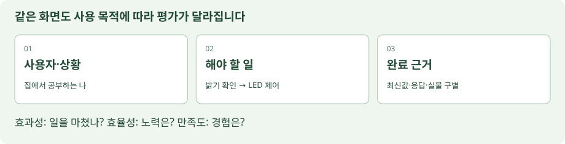
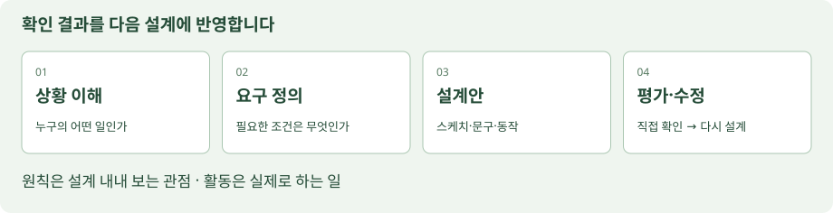
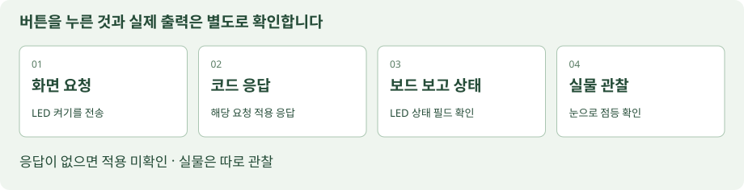
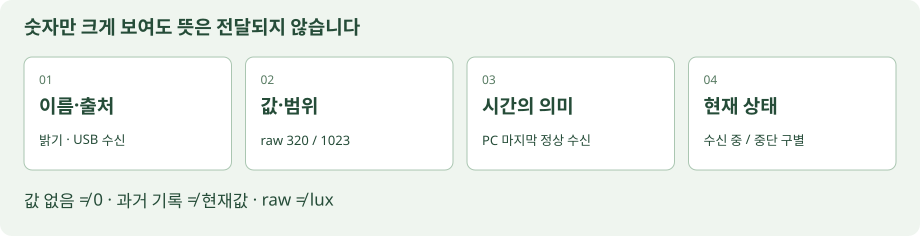
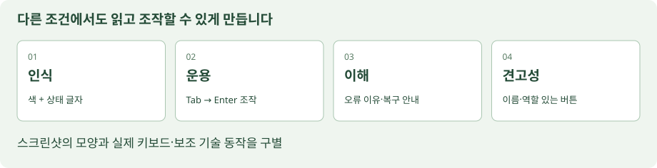

정의 · 문서 구성 · 원칙 · 세부 주제 · 적용
표준 번호보다 먼저, 개념의 뜻과 구조를 읽습니다.
다섯 기준의 전체 해설을 한 페이지에 모았습니다. 내용은 모두 펼쳐져 있습니다. 왼쪽 목차로 이동하거나 Ctrl+F로 용어를 찾으세요.
| 기준 | 다루는 질문 | 먼저 구별할 개념 |
|---|
| ISO 9241-11:2018 | 누가 어떤 일을 제대로 마쳤나요? | 사용 맥락 · 효과성 · 효율성 · 만족도 |
| ISO 9241-210:2019 | 사람을 이해한 뒤 만들고, 확인하며 고쳤나요? | 사용자·과업·환경 이해 · 사용자 참여 · 사용자 중심 평가 · 반복 · 전체 경험 · 다양한 전문 관점 |
| ISO 9241-110:2020 | 누르기 전과 후, 무엇을 알 수 있나요? | 과업 적합성 · 자기 설명성 · 기대 부합성 · 학습 용이성 · 제어 가능성 · 사용 오류 견고성 · 사용자 참여 |
| ISO 9241-112:2025 | 보이는 정보를 찾고 구별하고 이해할 수 있나요? | 발견 가능성 · 구별 가능성 · 간결성 · 명확한 해석 · 주의 분산 최소화 · 일관성 |
| WCAG 2.2 | 색을 못 보거나 마우스를 못 써도 되나요? | 인식 가능 · 운용 가능 · 이해 가능 · 견고성 |
읽는 법: 관련 절 번호와 정의·원칙의 요지는 공개된 용어·목차·미리보기에서 확인한 범위를 학습용으로 요약했습니다. 세부 주제 옆의 풀이는 교재 해설이며 화면·수치 예시는 수업용입니다. 원문 전체의 번역이나 표준 전체 적합성 판정 자료는 아닙니다.
이 표준의 주요 구성
| 관련 절 | 주요 내용 |
|---|
| 3절 | 사용자·목표·과업·사용성·효과성·효율성·만족도·사용 맥락 등의 용어 |
| 4절 | 사용성을 고려하는 이유와 기대하는 이점 |
| 5절 | 사용 맥락 속에서 사용성을 해석하는 개념 틀 |
| 6절 | 효과성·효율성·만족도, 사용성 개념의 특정 활용 및 관련 사용 결과 |
| 7절 | 사용 맥락과 그 구성 요소 |
용어와 정의의 요지
- 사용성 · usability관련 3.1.1
특정 사용자·목표·사용 맥락을 정했을 때, 그 사용에서 효과성·효율성·만족도가 어느 정도 확보되는지를 나타내는 개념입니다.
교재 해설 “쉬운 제품”이라는 성질 하나로 끝나지 않습니다. 사용자와 상황이 달라지면 같은 제품의 사용 결과도 달라질 수 있습니다.
- 목표 · goal관련 3.1.10
사용자가 이루려는 결과입니다.
교재 해설 “어두운 책상에 맞게 조명 상태를 정한다”가 목표라면, 값을 읽거나 버튼을 누르는 것은 그 목표에 이르는 행동입니다.
- 과업 · task관련 3.1.11
특정 목표를 이루기 위해 수행하는 활동들의 묶음입니다.
교재 해설 값 찾기→현재값인지 확인→모드 선택→결과 확인을 하나의 과업 흐름으로 적을 수 있습니다.
- 효과성 · effectiveness관련 3.1.12
사용자가 정해진 목표를 얼마나 정확하고 빠짐없이 달성하는가를 다룹니다.
교재 해설 속도만 보는 개념이 아닙니다. 잘못된 장치를 조작하거나 필요한 확인을 누락하면 빨리 끝내도 목표 달성이 불완전합니다.
- 효율성 · efficiency관련 3.1.13
얻은 결과에 비추어 사용한 자원을 살피는 개념입니다.
교재 해설 자원은 시간에 한정되지 않습니다. 노력·비용·재료 등도 관련될 수 있으며, 결과 수준과 조건을 함께 두고 비교해야 합니다.
- 만족도 · satisfaction관련 3.1.14
사용에서 생긴 신체적·인지적·정서적 반응이 사용자의 필요와 기대에 얼마나 맞는가를 다룹니다.
교재 해설 손이 불편함, 뜻을 이해하기 어려움, 결과를 믿기 어려움도 살펴볼 수 있습니다. 색 취향 한 문항으로 전체 만족을 대신하지 않습니다.
- 사용 맥락 · context of use관련 3.1.15
사용자, 목표와 과업, 자원, 환경이 이루는 사용 조건의 조합입니다.
교재 해설 환경은 장소만 뜻하지 않습니다. 기술·물리·사회·문화·조직 조건이 사용 방식에 영향을 줄 수 있습니다.

같은 화면도 사용 목적에 따라 평가가 달라집니다효과성: 일을 마쳤나? 효율성: 노력은? 만족도: 경험은?
교재의 개념도 · ISO 9241-11:2018를 우리 수업 상황에 연결한 그림
01관련 3.1.1 · 5절
사용성이란 무엇인가
Usability · 사용성
정의·원칙의 요지 · 학습용 요약사용성의 정의는 사용자·목표·사용 맥락이라는 조건과 효과성·효율성·만족도라는 결과를 함께 묶습니다.
그 안에서 다루는 세부 내용
| 관련 절·구분 | 세부 주제 | 교재에서 풀어 설명하면 |
|---|
| 5절 | 대상과 조건을 먼저 특정 | 비교할 화면 버전, 사용자 경험 수준, 과업과 실행 환경을 기록합니다. 달라진 조건을 숨기면 결과 차이를 화면 탓으로만 해석하기 쉽습니다. |
| 6절 | 세 결과를 나눠 관찰 | 완료 여부, 투입 자원, 사용 경험을 각각 기록합니다. 하나의 숫자로 합산하려면 별도로 근거와 방법을 정해야 합니다. |
핵심 구별 “사용성이 좋다”는 말에는 누구에게, 어떤 과업에서, 어떤 근거로 좋았는지가 따라야 합니다.
사용성은 단순히 화면이 예쁘거나 버튼이 크다는 뜻이 아닙니다. 정해진 사람이 정해진 상황에서 목표를 이루는 경험을 살펴보는 개념입니다. 같은 화면도 초보자와 숙련자에게 다르게 느껴질 수 있습니다.
문제 예
카드가 많고 색이 예쁘니 좋은 화면이라고 판단한다.
우리 키트에 적용하면
집에서 공부하는 내가 책상의 밝기를 확인하고 LED를 제어하는 일을 기준으로 화면을 살핀다.
직접 해 보기
내 화면으로 하려는 일을 동사로 끝나는 한 문장으로 쓰세요.
확인·풀이예: 책상 밝기를 확인하고 LED 켜기를 선택한다. “스마트 대시보드”라는 이름만으로는 완료할 일을 알 수 없습니다.
ISO 9241-11:2018 공식 소개 ↗ · 아래 원문·미리보기 링크에서 문서 구성과 공개 내용을 대조할 수 있습니다.
02관련 3.1.10~3.1.11 · 3.1.15
사용 맥락부터 정하기
Context of use · 사용하는 상황
정의·원칙의 요지 · 학습용 요약목표는 원하는 결과, 과업은 그 결과를 위한 활동, 사용 맥락은 활동이 이루어지는 조건의 조합입니다.
그 안에서 다루는 세부 내용
| 관련 절·구분 | 세부 주제 | 교재에서 풀어 설명하면 |
|---|
| 사용자 | 경험·능력·지원 조건 | 처음 배우는 학생과 숙련 개발자는 같은 약어를 다르게 이해합니다. 오늘의 제작 가정은 비전공 초심자·개인 Zoom 환경입니다. |
| 목표·과업 | 결과와 수단을 분리 | “LED 버튼 누르기”로 끝내지 말고 어떤 판단 때문에 출력 상태를 바꾸는지 적습니다. |
| 자원·환경 | 노트북·USB·공간·도움 | 작은 창, 느린 연결, 도움말 유무 같은 조건을 기록하면 재확인할 상황을 정하기 쉽습니다. |
핵심 구별 화면의 색이나 배치는 해결안입니다. 그 전에 사용하는 사람과 해야 할 일이 설명되어야 합니다.
사용자, 목표와 과업, 사용할 자원과 환경을 함께 봅니다. 과업은 목표를 위해 실제로 하는 일입니다. 환경에는 장소뿐 아니라 화면 크기, 조명, 주변 방해와 같은 조건도 들어갑니다.
문제 예
누구나 어디에서나 모든 부품을 제어한다.
우리 키트에 적용하면
처음 배우는 내가 집의 노트북에서 USB로 연결한 UNO의 밝기를 확인한다. 작은 창에서도 연결 상태와 LED 버튼이 먼저 보여야 한다.
직접 해 보기
사용자 / 목표 / 실제 행동 / 장비·환경을 각각 적으세요.
확인·풀이예: 나 / 어두움 판단 / 값 확인→LED 켜기 / 노트북·USB·집. 공장 관제나 실제 전등 제어로 범위를 넓히지 않습니다.
ISO 9241-11:2018 공식 소개 ↗ · 아래 원문·미리보기 링크에서 문서 구성과 공개 내용을 대조할 수 있습니다.
03관련 3.1.12 · 6.2
효과성: 원하는 일을 마쳤나
Effectiveness · 목표 달성의 정확성과 완전성
정의·원칙의 요지 · 학습용 요약효과성의 핵심은 목표 달성의 정확성과 완전성입니다.
그 안에서 다루는 세부 내용
| 관련 절·구분 | 세부 주제 | 교재에서 풀어 설명하면 |
|---|
| 교재의 관찰 방법 | 완료 조건을 행동으로 적기 | “현재값과 과거값을 구별하고, 선택한 출력의 결과를 확인함”처럼 관찰 가능한 조건을 적습니다. |
| 교재의 기록 방법 | 성공·부분 완료·오류를 분리 | 잘못된 단위를 읽은 경우와 요청만 보낸 경우를 같은 성공으로 세지 않습니다. 실제 점등 관찰이 빠졌다면 별도 칸으로 남깁니다. |
핵심 구별 성공률은 목표와 완료 기준을 먼저 정한 뒤 계산할 수 있는 교재의 지표 예입니다. 표준이 모든 대시보드에 동일한 성공률을 지정한 것은 아닙니다.
사용자가 하려던 일을 정확하게, 필요한 부분까지 끝냈는지 봅니다. 버튼을 클릭했다는 사실만으로 목표 달성이 확인되지는 않습니다. 무엇을 완료로 볼지 먼저 정해야 비교가 가능합니다.
문제 예
LED 켜기 버튼을 눌렀으니 조작 성공이다.
우리 키트에 적용하면
최신 밝기를 읽고, LED 켜기를 요청하고, 해당 요청의 응답과 보고 상태를 구별한다. 실물 점등은 눈으로 따로 확인한다.
직접 해 보기
내 과업의 완료 조건 두 가지를 쓰세요.
확인·풀이예: 현재 수신값임을 구별했다 / 요청 결과를 구별했다. 실제 LED를 못 봤다면 “실물 점등 미확인”이라고 남깁니다.
ISO 9241-11:2018 공식 소개 ↗ · 아래 원문·미리보기 링크에서 문서 구성과 공개 내용을 대조할 수 있습니다.
04관련 3.1.13 · 6.3
효율성: 얼마나 노력했나
Efficiency · 결과를 얻는 데 쓴 자원
정의·원칙의 요지 · 학습용 요약효율성은 결과와 그 결과를 얻는 데 투입한 자원의 관계를 살핍니다.
그 안에서 다루는 세부 내용
| 관련 절·구분 | 세부 주제 | 교재에서 풀어 설명하면 |
|---|
| 교재의 비교 방법 | 같은 결과·비슷한 조건 맞추기 | 한 화면은 센서 확인만 하고 다른 화면은 출력 관찰까지 했다면 작업 시간이 짧다는 이유만으로 직접 비교하기 어렵습니다. |
| 교재의 기록 방법 | 시간과 사람의 노력을 구분 | 걸린 시간, 재입력, 되돌아감, 도움말을 찾은 이유를 나눠 적습니다. 보드 응답 속도가 좋아도 메뉴 탐색은 불편할 수 있습니다. |
핵심 구별 미완료 과업을 빨리 포기한 기록을 효율 향상으로 해석하지 않습니다. 기준값을 너무 넓혀 오류를 숨기는 방법도 결과의 질을 바꿉니다.
목표를 달성하면서 쓴 시간과 노력 같은 자원을 살핍니다. 완료하지 못한 화면이 빨리 닫힌다고 효율적이라고 할 수는 없습니다. 같은 과업과 조건을 정한 뒤 탐색·입력·되돌아감을 비교합니다.
문제 예
최신값을 찾으려면 설정→센서→상세→이력을 열어야 한다.
우리 키트에 적용하면
첫 화면에 최신 밝기와 수신 상태를 함께 두어 과거 그래프를 헤매지 않고 판단한다.
직접 해 보기
최신 밝기 찾기를 직접 수행하고 돌아간 경로를 적으세요.
확인·풀이예: 첫 화면→밝기 카드, 한 경로. 시간 목표를 정했다면 수업에서 정한 목표와 실제 측정값을 따로 적습니다. ISO가 정한 합격 초 수는 아닙니다.
ISO 9241-11:2018 공식 소개 ↗ · 아래 원문·미리보기 링크에서 문서 구성과 공개 내용을 대조할 수 있습니다.
05관련 3.1.14 · 6.4
만족도: 사용 후 어떻게 느꼈나
Satisfaction · 사용 경험에 대한 반응
정의·원칙의 요지 · 학습용 요약만족도는 사용에서 생기는 신체·인지·정서 반응이 필요와 기대를 충족하는 정도입니다.
그 안에서 다루는 세부 내용
| 관련 절·구분 | 세부 주제 | 교재에서 풀어 설명하면 |
|---|
| 교재의 질문 | 몸의 불편과 이해 부담 | 작은 버튼을 반복해서 잘못 눌렀는지, 상태를 해석하느라 피곤했는지 구체적인 장면을 적습니다. |
| 교재의 질문 | 기대와 신뢰 | “연결됨”을 보고 실측으로 기대했는데 연습 숫자였다면 기대와 실제 기능이 어긋난 경험을 남깁니다. |
핵심 구별 자기 점검, 강사 의견, 대표 사용자의 사용 후 의견을 서로 구별합니다. 한 사람의 선호를 집단의 만족도로 보고하지 않습니다.
사용하면서 느낀 편안함, 기대 충족과 불편을 살핍니다. 만든 사람이 “좋아 보인다”고 추측하는 것과 사용 후 경험을 듣는 것은 다릅니다. 의견은 구체적인 순간과 연결해야 수정에 도움이 됩니다.
문제 예
내가 마음에 드는 색이므로 누구나 만족할 것이다.
우리 키트에 적용하면
직접 조작한 뒤 “버튼을 눌렀는데 결과가 기다림인지 실패인지 헷갈렸다”라고 경험을 기록한다.
직접 해 보기
직접 써 본 뒤 편한 점 하나, 불편한 순간 하나를 적으세요.
확인·풀이“좋다/나쁘다”에 이유를 붙입니다. Zoom 개인 실습의 자기 점검은 다른 사용자에게 검증받은 결과와 구별합니다.
ISO 9241-11:2018 공식 소개 ↗ · 아래 원문·미리보기 링크에서 문서 구성과 공개 내용을 대조할 수 있습니다.
06관련 5~6절
세 관점으로 같은 화면 보기
효과성 / 효율성 / 만족도
정의·원칙의 요지 · 학습용 요약같은 사용 맥락을 기준으로 세 관점을 함께 해석하되 각각의 관찰값을 보존합니다.
그 안에서 다루는 세부 내용
| 관련 절·구분 | 세부 주제 | 교재에서 풀어 설명하면 |
|---|
| 종합 해석 | 정확성·노력·경험의 충돌 | 확인을 하나 추가하면 잘못된 제어는 줄어도 노력이 늘 수 있습니다. 과업의 중요도와 오류 결과를 고려해 설계를 선택합니다. |
| 교재의 결과표 | 조건→관찰→수정→재확인 | 화면 버전과 사용 상황을 남겨야 나중에 어떤 수정 때문에 결과가 달라졌는지 설명할 수 있습니다. |
핵심 구별 사용성은 화면 부품의 체크 개수와 같지 않습니다. 아래 가상 기록처럼 어떤 사용 결과를 얻었는지 말하는 데 이 틀을 씁니다.
세 관점은 서로 바꿔 쓸 수 없습니다. 정확히 끝냈는지, 얼마나 노력했는지, 사용 경험은 어땠는지를 나누어야 무엇을 고칠지 분명해집니다. 한 지표만 좋아졌다고 전체 사용성이 좋아졌다고 단정하지 않습니다.
문제 예
“빠르고 예쁘다”라는 한 문장으로 평가를 끝낸다.
우리 키트에 적용하면
완료: 현재·과거를 구별함 / 노력: 메뉴를 두 번 되돌아감 / 경험: 응답 문구가 불안함으로 기록한다.
직접 해 보기
내 화면에서 관점별로 확인할 질문을 하나씩 쓰세요.
확인·풀이완료 여부·탐색 과정·사용 후 의견이 서로 다른 칸에 있어야 합니다. 이 세 칸은 수업의 기록 양식이며 표준 인증 양식은 아닙니다.
ISO 9241-11:2018 공식 소개 ↗ · 아래 원문·미리보기 링크에서 문서 구성과 공개 내용을 대조할 수 있습니다.
세 지표를 분리해서 읽는 평가 예
다음은 개념을 구별하려고 만든 가상 기록입니다. 실제 수업 측정값이나 ISO의 합격선이 아닙니다.
| 가상 관찰 | 어느 관점인가 | 이 기록으로 알 수 있는 것 |
|---|
| 10번의 중단 상황 중8번을 현재값으로 오해하지 않고 구별 | 효과성 | 완료 조건에 맞춰 성공을 정의했다면8/10으로 요약할 수 있음. 오류 종류도 함께 기록 |
| 완료한 같은 과업에서 불필요한 메뉴 왕복이3회에서1회로 감소 | 효율성 | 조건과 완료 수준이 같다는 전제에서 탐색 노력을 비교. 통신 지연 감소와는 구별 |
| 사용 후 “명령이 대기인지 실패인지 몰라 불안했다”는 의견 | 만족도 | 정서적 반응과 혼동 장면에 대한 근거. 전체 사용자 집단의 의견으로 확대하지 않음 |
ISO 9241-210:2019
02 · 사람 중심 설계
사람을 이해한 뒤 만들고, 확인하며 고쳤나요?
컴퓨터 기반 상호작용 시스템의 전 생애주기에서 사람 중심 설계를 계획하고 관리하는 원칙·활동을 다룹니다. 화면뿐 아니라 하드웨어·소프트웨어·도움과 지원을 포함한 시스템을 대상으로 봅니다.
이 표준의 주요 구성
| 관련 절 | 주요 내용 |
|---|
| 3절 | 사람 중심 설계·사용자 경험·프로토타입·검증 등 용어 |
| 4절 | 사람 중심 설계를 채택하는 이유 |
| 5.2~5.7 | 설계 전반에 적용할 여섯 원칙 |
| 6절 | 책임, 계획 내용, 프로젝트 계획과의 통합, 시기·자원 |
| 7.2~7.5 | 사용 맥락 명세, 사용자 요구 명세, 설계안 제작, 설계 평가 |
| 8~9절 | 지속가능성 및 적합성 |
| 부속서 A·B | 9241 표준군 개요와 적용·적합성 평가 지원 자료 |
용어와 정의의 요지
- 사람 중심 설계 · human-centred design관련 3.7
시스템의 사용에 초점을 맞추고 인간공학·사용성의 지식과 방법을 적용하여 더 잘 사용할 수 있는 시스템을 설계·개발하는 접근입니다.
교재 해설 사용자뿐 아니라 영향을 받는 이해관계자도 고려합니다. “사용자가 요구한 기능을 모두 추가”하는 뜻으로 줄이지 않습니다.
- 상호작용 시스템 · interactive system관련 3.8
사람이 목표를 위해 상호작용하는 하드웨어·소프트웨어·서비스·사람 등의 조합입니다.
교재 해설 UNO, USB, 웹 화면, 실행 안내와 강사의 지원이 오늘의 사용 경험에 함께 영향을 줍니다.
- 프로토타입 · prototype관련 3.9
분석·설계·평가를 위해 시스템의 전부 또는 일부를 제한된 형태로 표현한 것입니다.
교재 해설 종이 스케치도 프로토타입이 될 수 있습니다. 화면 시안이 센서 통신 구현까지 완료했다는 뜻은 아닙니다.
- 사용자 경험 · user experience관련 3.15
실제 사용하거나 사용할 것으로 예상하면서 생기는 사용자의 지각과 반응을 다룹니다.
교재 해설 사용 전의 기대, 사용 중의 이해·감정, 사용 후의 인상도 질문 대상입니다. 정상 화면에서 클릭한 순간만 보지 않습니다.
- 타당성 확인 · validation관련 3.17
특정한 의도된 사용·적용의 요구가 충족됐는지를 객관적 증거로 확인합니다.
교재 해설 교재 예: 초보자가 실제 상황에서 최신값을 구별하고 필요한 행동을 마칠 수 있는지 확인합니다.
- 명세 검증 · verification관련 3.18
정해 둔 요구사항을 충족했는지를 객관적 증거로 확인합니다.
교재 해설 교재 예: “수신 중단 시 현재값을 숨김”이라는 명세대로 작동하는지 검사합니다. 사용 목적의 적절성 확인과 질문이 다릅니다.

확인 결과를 다음 설계에 반영합니다원칙은 설계 내내 보는 관점 · 활동은 실제로 하는 일
교재의 개념도 · ISO 9241-210:2019를 우리 수업 상황에 연결한 그림
01관련 3.7 · 5~7절
사람 중심 설계의 전체 지도
6가지 원칙과 4가지 활동
정의·원칙의 요지 · 학습용 요약사람 중심 설계는 사람의 사용을 설계 의사결정의 근거로 삼는 접근입니다. 원칙은 과정 전체의 관점이고 활동은 그 관점을 실제 작업으로 옮기는 일입니다.
그 안에서 다루는 세부 내용
| 관련 절·구분 | 세부 주제 | 교재에서 풀어 설명하면 |
|---|
| 5절 | 여섯 원칙 | 사용자 이해·참여·평가·반복·전체 경험·여러 전문 관점이 과정 전반에 걸쳐 적용됩니다. |
| 6절 | 계획과 관리 | 누가 참여하고 어떤 확인을 언제 어떤 자원으로 할지 계획해야 합니다. 좋은 의도만으로 사용자 참여가 이루어지지는 않습니다. |
| 7절 | 네 활동 | 맥락·요구·설계안·평가 사이에 추적 가능한 연결을 남깁니다. |
핵심 구별 네 활동을 완료했다는 체크만으로 전체 접근의 적합성을 판정하지 않습니다. 실제 사용자와 근거가 과정에 어떻게 들어갔는지가 중요합니다.
원칙은 설계 내내 지켜볼 관점이고, 활동은 실제로 해야 하는 일입니다. 여섯 원칙과 네 활동을 같은 목록으로 섞지 않습니다. 멋진 시안을 먼저 만드는 것보다 누가 무엇을 필요로 하는지부터 확인합니다.
문제 예
AI에 “미래적인 대시보드 만들어 줘”만 입력한다.
우리 키트에 적용하면
사용 상황을 적고→필요한 기능을 정하고→스케치를 만들고→직접 사용하며 수정한다.
직접 해 보기
현재 내 작업이 상황 이해·요구·설계안·평가 중 어디에 있는지 고르세요.
확인·풀이스케치가 완성돼도 평가와 수정이 남습니다. 네 활동은 한 번 끝내는 직선 절차가 아니라 필요에 따라 되돌아가는 흐름입니다.
ISO 9241-210:2019 공식 소개 ↗ · 아래 원문·미리보기 링크에서 문서 구성과 공개 내용을 대조할 수 있습니다.
02관련 5.2
원칙 1 · 사람과 상황 이해
사용자·과업·환경에 대한 명확한 이해
정의·원칙의 요지 · 학습용 요약설계 판단은 사용자·과업·환경을 명확하게 이해한 데 기반해야 한다는 원칙입니다.
그 안에서 다루는 세부 내용
| 관련 절·구분 | 세부 주제 | 교재에서 풀어 설명하면 |
|---|
| 7.2 | 맥락을 문서로 구체화 | 사용자 특성, 수행 과업, 사용하는 장비와 지원, 물리·사회적 상황을 적습니다. 사용 목적을 검토할 만큼 구체적이어야 합니다. |
| 교재의 해석 | 추측과 관찰 분리 | “집에서는 한 화면만 사용할 것”이라는 가정과 실제 화면 공유에서 본 행동을 같은 사실로 취급하지 않습니다. |
핵심 구별 사용자에게 좋아하는 색만 묻는 것은 과업과 환경에 대한 이해를 대신하지 못합니다.
사용할 사람, 실제 하는 일, 사용 환경을 근거로 설계합니다. 상상한 기능 목록을 사용자 요구로 곧바로 바꾸지 않습니다. 인터뷰가 없는 오늘은 자신의 상황과 제작 가정을 구별해 적습니다.
문제 예
지도와 전력 그래프가 멋져 보이니 우리 키트에도 넣는다.
우리 키트에 적용하면
GPS와 전력 센서가 없는 키트이므로 집 책상의 밝기·온습도와 LED 한 출력에 집중한다.
직접 해 보기
실제 준비물로 확인한 사실과 아직 가정인 조건을 나누세요.
확인·풀이UNO·CdS·LED는 준비물 확인 대상입니다. “모든 사용자가 어두운 테마를 좋아함”은 확인되지 않은 가정입니다.
ISO 9241-210:2019 공식 소개 ↗ · 아래 원문·미리보기 링크에서 문서 구성과 공개 내용을 대조할 수 있습니다.
03관련 5.3
원칙 2 · 설계 중 사용자 참여
설계·개발 전반의 사용자 참여
정의·원칙의 요지 · 학습용 요약사용자를 설계·개발 과정 전반에 참여시키는 원칙입니다.
그 안에서 다루는 세부 내용
| 관련 절·구분 | 세부 주제 | 교재에서 풀어 설명하면 |
|---|
| 사용자 관점 | 대표성과 참여 시점 | 누구의 사용을 대변하는지, 어느 단계의 어떤 결정에 참여했는지 남깁니다. 참가자가 개발자뿐이면 초보 사용자의 경험이 빠질 수 있습니다. |
| 교재의 해석 | 개인 수업의 가능한 범위 | 자기 상황 기록과 강사 피드백은 실행할 수 있지만 대표 사용자 연구의 대체 증거로 보고하지 않습니다. |
핵심 구별 사용자 참여와 사용자에게 승인 도장을 받는 일은 다릅니다. 의견이 요구와 설계 수정에 어떻게 연결됐는지 설명해야 합니다.
사용자 의견을 마지막 시연 때 한 번 받는 것으로 끝내지 않습니다. 요구를 정할 때, 시안을 볼 때, 작동하는 화면을 쓸 때의 경험이 서로 다릅니다. 참여 여부와 실제로 들은 내용을 기록합니다.
문제 예
완성 후에만 결과를 보여 주고 처음 생각이 맞았다고 가정한다.
우리 키트에 적용하면
개인 수업에서는 내가 사용할 장면을 먼저 적고, 사용 후 관찰을 남긴다. 강사 피드백을 받았다면 어떤 부분을 바꿨는지 기록한다.
직접 해 보기
내가 직접 확인한 것과 다른 사람에게 들은 의견을 구별하세요.
확인·풀이짝 활동은 필요하지 않습니다. 자기 사용·강사 피드백을 일반 사용자를 조사한 것처럼 표현하지 않습니다.
ISO 9241-210:2019 공식 소개 ↗ · 아래 원문·미리보기 링크에서 문서 구성과 공개 내용을 대조할 수 있습니다.
04관련 5.4 · 7.5
원칙 3 · 평가가 수정을 이끈다
사용자 중심 평가
정의·원칙의 요지 · 학습용 요약사용자 중심 평가의 결과가 설계를 이끌고 다듬도록 하는 원칙입니다.
그 안에서 다루는 세부 내용
| 관련 절·구분 | 세부 주제 | 교재에서 풀어 설명하면 |
|---|
| 7.5.4 | 사용자를 통한 평가 | 대표 사용자가 과업을 수행하는 과정에서 문제와 사용 결과를 확인하는 방향입니다. 무엇을 수행했는지 남겨야 합니다. |
| 7.5.5 | 검토에 의한 평가 | 기준·관례·요구에 비추어 화면과 동작을 살피는 방향입니다. 직접 사용자 수행을 본 것과 근거 종류가 다릅니다. |
| 7.5.6 | 운영 중 확인 | 처음 배포한 화면의 점검으로 모든 이후 사용 경험을 확인했다고 볼 수는 없습니다. |
핵심 구별 체크리스트를 통과한 화면이라도 실제 과업에서 혼동이 발견될 수 있습니다. 두 종류의 평가가 다른 질문에 답합니다.
평가는 점수를 주는 일만 뜻하지 않습니다. 실제 과업을 수행하며 어디서 막혔는지 찾아 설계를 바꾸는 데 씁니다. “괜찮아 보임”보다 관찰한 행동과 혼동을 근거로 삼습니다.
문제 예
새로고침하면 다시 되니 USB 중단 안내는 괜찮다고 판단한다.
우리 키트에 적용하면
연습 화면에서 수신 중단을 재현하니320이 현재처럼 보였다. 현재값을 숨기고 마지막 수신 시각을 남기도록 바꾼다.
직접 해 보기
관찰한 문제→바꿀 부분을 한 줄로 연결하세요.
확인·풀이예: 오래된 값으로 판단함→현재/과거 표시 분리. 실제 학생을 관찰하지 않았다면 “연습 화면 자기 확인”이라고 씁니다.
ISO 9241-210:2019 공식 소개 ↗ · 아래 원문·미리보기 링크에서 문서 구성과 공개 내용을 대조할 수 있습니다.
05관련 5.5
원칙 4 · 확인하고 다시 만들기
Iterative · 반복하는 과정
정의·원칙의 요지 · 학습용 요약평가에서 얻은 내용으로 요구나 설계안을 다시 검토하는 반복적 과정이라는 원칙입니다.
그 안에서 다루는 세부 내용
| 관련 절·구분 | 세부 주제 | 교재에서 풀어 설명하면 |
|---|
| 반복의 단위 | 질문→설계→관찰→수정 | 각 반복에서 무엇이 불확실했고 어떤 근거로 선택했는지 남깁니다. 시안을 여러 개 생성하는 횟수만 세지 않습니다. |
| 교재의 적용 | 같은 조건에서 재확인 | 수신 중단 문구를 고친 뒤 정상 모드만 보지 말고 다시 중단을 재현해야 수정 효과를 확인할 수 있습니다. |
핵심 구별 반복은 끝없는 장식 수정이 아닙니다. 확인할 가설과 완료 조건을 가진 개선을 뜻하는 방향으로 이해합니다.
반복은 같은 요청으로 시안만 계속 만드는 일이 아닙니다. 앞선 확인 결과를 다음 설계에 반영하고 다시 확인하는 순환입니다. 수정 전후를 남겨야 무엇이 개선됐는지 알 수 있습니다.
문제 예
마음에 들 때까지 테마만 다시 생성한다.
우리 키트에 적용하면
문구 수정 전 캡처→중단 안내 추가→같은 중단 상황 재현→이제 다음 행동을 읽을 수 있는지 확인한다.
직접 해 보기
수정 전 / 이유 / 수정 후 / 재확인을 각각 적으세요.
확인·풀이새 색상만 설명하지 말고 어떤 혼동이 줄었는지 적습니다. 미구현 상태면 설계안 확인까지만 했다고 표시합니다.
ISO 9241-210:2019 공식 소개 ↗ · 아래 원문·미리보기 링크에서 문서 구성과 공개 내용을 대조할 수 있습니다.
06관련 3.15 · 5.6
원칙 5 · 처음부터 끝까지의 경험
전체 사용자 경험
정의·원칙의 요지 · 학습용 요약설계는 전체 사용자 경험을 고려한다는 원칙입니다. 사용자 경험은 실제 사용과 예상 사용에서 생기는 지각·반응을 포함합니다.
그 안에서 다루는 세부 내용
| 관련 절·구분 | 세부 주제 | 교재에서 풀어 설명하면 |
|---|
| 사용 전 | 기대가 형성되는 장면 | 소개 문구가 “자동 제어”라고 약속하면 사용자는 연결 후 자동 동작을 기대할 수 있습니다. 제목·안내·첫 화면이 기대에 영향을 줍니다. |
| 사용 중 | 이해·감정·행동의 연결 | 명령 대기 표시를 이해하고 다음 행동을 정하는 동안 생기는 부담·신뢰·불안 등을 과업 장면과 함께 살핍니다. |
| 사용 후 | 기억과 다음 사용 | 종료 뒤 결과를 어디서 확인할지, 다시 사용할 때 무엇을 기억하고 기대하는지 질문할 수 있습니다. 이 구분은 교재의 설명 틀입니다. |
| 개인의 조건 | 같은 화면의 다른 경험 | 이전 경험·기술·태도와 신체 상태, 사용 맥락 등이 경험에 영향을 줍니다. 디자이너가 경험의 모든 원인을 통제한다고 보지 않습니다. |
핵심 구별 전체 경험은 화면 이동 경로를 길게 그리는 것보다 넓은 개념입니다. 설치 안내·기대·정상 사용·실패·지원·재사용의 어떤 장면에서 어떤 반응이 생겼는지 연결합니다.
사용 경험은 센서 카드가 정상으로 보일 때만 생기지 않습니다. 파일 열기, 연결 준비, 오류, 종료와 다시 시작하는 과정도 포함됩니다. 가장 예쁜 정상 화면 하나로 모든 경험을 대표하지 않습니다.
문제 예
정상 수신 화면만 디자인하고 연결 실패는 빈 화면으로 둔다.
우리 키트에 적용하면
처음 열기→연습/USB 선택→수신→명령→중단 안내→다시 연결을 한 흐름으로 설명한다.
직접 해 보기
내 화면의 시작·실패·복구 장면을 한 가지씩 그리세요.
확인·풀이연결 전에는 현재값을 비우고, 중단 시 마지막 시각과 복구 안내를 남기는 식으로 장면이 이어져야 합니다.
ISO 9241-210:2019 공식 소개 ↗ · 아래 원문·미리보기 링크에서 문서 구성과 공개 내용을 대조할 수 있습니다.
07관련 5.7
원칙 6 · 여러 전문 관점
다양한 지식과 관점
정의·원칙의 요지 · 학습용 요약설계팀에 여러 전문 지식과 관점을 포함한다는 원칙입니다.
그 안에서 다루는 세부 내용
| 관련 절·구분 | 세부 주제 | 교재에서 풀어 설명하면 |
|---|
| 협력의 이유 | 서로 다른 판단의 충돌 다루기 | 기능 구현, 현장 업무, 시각 표현, 접근성, 지원과 유지관리의 판단은 같은 답을 내지 않을 수 있습니다. |
| 교재의 적용 | 개인 작업에서 점검 관점 확장 | 학생은 혼자 작업하되 회로·사용자·개발·접근성 질문을 차례로 확인합니다. 이것을 실제 다학제 팀을 구성한 것으로 보고하지 않습니다. |
핵심 구별 여러 전공 이름을 나열하기보다 어떤 결정에 어떤 지식이 필요했고, 놓친 문제를 어떻게 보완했는지 설명합니다.
실제 제품 설계에는 사용자 업무, 디자인, 개발, 접근성 등 여러 관점이 필요합니다. 한 사람이 모든 분야의 전문가라고 가정하면 빠뜨리는 문제가 생깁니다. 오늘은 혼자 만들되 서로 다른 질문으로 점검합니다.
우리 키트에 적용하면
사용자: 무엇을 판단하나 / 회로: 실제 부품이 있나 / 개발: 응답을 구별하나 / 접근성: 키보드로 되나를 점검한다.
직접 해 보기
내가 놓치기 쉬운 관점 하나와 질문을 적으세요.
확인·풀이개인 점검은 다학제 설계팀을 구성한 것과 같지 않습니다. 여기서는 놓친 질문을 찾는 데 적용합니다.
ISO 9241-210:2019 공식 소개 ↗ · 아래 원문·미리보기 링크에서 문서 구성과 공개 내용을 대조할 수 있습니다.
08관련 7.2~7.5
네 활동을 내 프로젝트에 적용
상황 이해 → 요구 정의 → 설계안 → 평가
정의·원칙의 요지 · 학습용 요약사용 맥락을 명세하고, 사용자 요구를 정하고, 설계안을 만들고, 설계를 평가하는 네 활동을 연결합니다.
그 안에서 다루는 세부 내용
| 관련 절·구분 | 세부 주제 | 교재에서 풀어 설명하면 |
|---|
| 7.2 | 맥락 명세 | 사용자·목표·과업·자원·환경을 정리합니다. |
| 7.3 | 사용자 요구 명세 | 이해관계자 필요, 요구 간 충돌, 확인 가능한 요구의 질을 살핍니다. |
| 7.4 | 설계안 제작 | 과업과 상호작용을 설계하고 스케치·시안·구현으로 구체화한 뒤 평가 결과로 수정하고 구현 담당자에게 전달합니다. |
| 7.5 | 설계 평가 | 사용자 수행·검토 등 목적에 맞는 방법으로 근거를 수집하고 필요한 활동으로 되돌아갑니다. |
핵심 구별 기능 요구와 사용자 요구의 문장 수준을 구별합니다. “그래프를 넣는다”는 설계 선택이고 “지금 값과 과거 변화를 구별한다”는 사용자 필요에 가까운 진술입니다.
상황 이해는 누구의 어떤 일을 다루는지 정하는 일입니다. 요구는 그 일을 위해 필요한 조건이고, 설계안은 그 조건을 화면과 동작으로 표현한 것입니다. 평가는 설계가 요구를 돕는지 확인하는 활동입니다.
문제 예
요구: 예쁘게. 설계: 카드 많이. 평가: 완성.
우리 키트에 적용하면
상황: 집의 USB 키트 / 요구: 최신값·중단 구별 / 설계: 수신 상태와 밝기 묶음 / 평가: 중단 후 현재값이 숨겨지는지 확인.
직접 해 보기
개인 작성지에 네 칸을 채우고 한 번 수정하세요.
확인·풀이평가에서 문제가 나오면 요구나 설계안으로 돌아갈 수 있습니다. 설명문을 읽는 것에서 멈추지 않고 자신의 설계를 수정한 근거를 남깁니다.
ISO 9241-210:2019 공식 소개 ↗ · 아래 원문·미리보기 링크에서 문서 구성과 공개 내용을 대조할 수 있습니다.
사람 중심 설계가 남기는 작업물
다음 문서 이름과 내용은 수업용 작업 예입니다. 표준이 지정한 단일 서식은 아닙니다.
| 활동 | 작업물 예 | 연결해서 확인할 점 |
|---|
| 사용 맥락 명세 | 사용자·환경·실제 과업 한 장 | 집의 초보 학습자에게 공장용 경보 용어가 맞는가 |
| 사용자 요구 명세 | 최신 여부 구별·출력 응답 확인의 완료 조건 | 센서가 있는 것과 사용자가 이해할 수 있는 것을 구별했는가 |
| 설계안 | 연결 전·정상·중단 상태의 스케치 | 각 화면 요소가 어느 요구를 돕는가 |
| 설계 평가 | 과업 수행 관찰·문제·수정·재확인 기록 | 실제 사용 관찰인지, 전문가 검토인지, 자기 점검인지 밝혔는가 |
ISO 9241-110:2020
03 · 상호작용
누르기 전과 후, 무엇을 알 수 있나요?
사용자와 상호작용 시스템이 주고받는 행동을 설계·평가하는 일반 원칙입니다. 특정 기술의 버튼 디자인 규격이 아니라 과업 지원, 이해, 기대, 학습, 제어, 오류와 참여를 살피는 틀입니다.
이 표준의 주요 구성
| 관련 절 | 주요 내용 |
|---|
| 3절 | 상호작용 관련 용어 |
| 4절 | 일곱 원칙의 범위·관계·적용 틀 |
| 5.1~5.7 | 각 원칙과 원칙별 일반 설계 권고 |
| 부속서 A | 권고 적용을 돕는 체크리스트 |
용어와 정의의 요지
- 원칙 · principle관련 4~5절
여러 상황에 걸쳐 설계 방향을 판단하는 일반적인 관점입니다.
교재 해설 어떤 프로젝트에 어떤 권고가 적합한지는 사용 맥락과 과업에 비추어 판단합니다.
- 일반 설계 권고 · general design recommendation관련 5절
각 원칙을 구체적인 설계 판단으로 연결하는 권고 주제들입니다.
교재 해설 하나의 권고가 여러 원칙에 관련될 수 있습니다. 원칙 이름끼리 완전히 분리된 검사 항목이라고 가정하지 않습니다.

버튼을 누른 것과 실제 출력은 별도로 확인합니다응답이 없으면 적용 미확인 · 실물은 따로 관찰
교재의 개념도 · ISO 9241-110:2020를 우리 수업 상황에 연결한 그림
01관련 4절
상호작용은 주고받는 과정
Interaction · 사람의 행동과 시스템의 반응
정의·원칙의 요지 · 학습용 요약상호작용 원칙은 사용성에 기여하는 설계 판단의 틀입니다. 원칙은 서로 관련되고 권고의 적용 우선순위는 사용 조건에 따라 달라집니다.
그 안에서 다루는 세부 내용
| 관련 절·구분 | 세부 주제 | 교재에서 풀어 설명하면 |
|---|
| 원칙 간 관계 | 한 문제에 여러 원칙 연결 | “성공”을 너무 일찍 표시하는 문제는 상태 설명, 사용자 기대, 신뢰에 모두 연결할 수 있습니다. |
| 적용 방법 | 문제 장면부터 기록 | 표준 번호부터 고르기보다 실제 행동과 반응에서 혼동을 적고 관련 원칙을 찾아 수정합니다. |
핵심 구별 현재판은2020판입니다. 2006판 목록을 그대로 가져와 개별화 가능성을 독립 원칙으로 설명하지 않습니다. 여기서는 개별화가 제어 가능성의 권고 주제에 포함됩니다.
상호작용은 클릭하는 순간 하나가 아니라 행동을 선택하고, 실행하고, 반응을 해석하는 과정입니다. 사용자는 지금 상태를 알아야 다음 행동을 결정할 수 있습니다. 이 표준의 2020판은 일곱 원칙을 제시합니다.
문제 예
버튼을 누르는 즉시 성공 색으로 바꾼다.
우리 키트에 적용하면
사용자가 LED 켜기를 선택함→요청을 보냄→응답을 기다림→결과와 다음 행동을 표시한다.
직접 해 보기
내 화면에서 한 행동과 그에 대한 반응을 연결하세요.
확인·풀이요청을 보냈다는 사실과 보드가 적용했다고 응답한 사실, 실제 점등을 관찰한 사실은 각각 다릅니다.
ISO 9241-110:2020 공식 소개 ↗ · 아래 원문·미리보기 링크에서 문서 구성과 공개 내용을 대조할 수 있습니다.
02관련 5.1
원칙 1 · 과업 적합성
Suitability for the user’s tasks
정의·원칙의 요지 · 학습용 요약기능과 상호작용이 사용자의 과업 특성에 맞게 구성되어 과업 완료를 돕는다는 원칙입니다.
그 안에서 다루는 세부 내용
| 관련 절·구분 | 세부 주제 | 교재에서 풀어 설명하면 |
|---|
| 5.1.2 | 과업에 맞는 시스템인지 판단 | 처음 화면에서 할 수 있는 일을 알아야 사용자가 목적에 적합한 도구인지 판단할 수 있습니다. |
| 5.1.3 | 과업 수행 노력 최적화 | 필요한 정보와 제어를 행동 흐름에 맞춰 배치합니다. |
| 5.1.4 | 과업을 돕는 기본값 | 기본값은 편의를 주지만 실제로 지원하는 범위와 사용 목적을 함께 고려해야 합니다. |
핵심 구별 구현하기 쉬운 센서를 모두 카드로 나열하는 것과 사용자가 해야 할 일을 돕는 것은 다른 설계 판단입니다.
사용자가 해야 하는 일을 화면이 실제로 돕는지 봅니다. 기능 수가 많다고 과업에 맞는 것은 아닙니다. 자주 필요한 정보와 행동을 함께 두고 목적 없는 단계를 줄입니다.
문제 예
LED 제어는 세 번째 탭에 있고 첫 화면은 장식용 지도뿐이다.
우리 키트에 적용하면
책상 밝기 카드 바로 옆에서 연결 상태를 확인하고 LED 켜기를 선택한다.
직접 해 보기
내 과업과 관계없는 요소 하나를 보조 구역으로 옮기거나 빼세요.
확인·풀이기능을 뺀 이유를 “단순하게”로 끝내지 말고 어떤 일을 먼저 할 수 있게 됐는지 설명합니다.
ISO 9241-110:2020 공식 소개 ↗ · 아래 원문·미리보기 링크에서 문서 구성과 공개 내용을 대조할 수 있습니다.
03관련 5.2
원칙 2 · 자기 설명성
Self-descriptiveness · 화면 스스로 상태 설명
정의·원칙의 요지 · 학습용 요약필요한 때에 적절한 정보를 제시하여 기능과 사용 방법이 불필요한 탐색 없이 이해되도록 하는 원칙입니다.
그 안에서 다루는 세부 내용
| 관련 절·구분 | 세부 주제 | 교재에서 풀어 설명하면 |
|---|
| 5.2.2 | 정보의 존재와 분명함 | 어디에 있는지, 무엇을 할 수 있는지, 어떻게 하는지 드러내는 이름과 안내를 살핍니다. |
| 5.2.3 | 처리 상태의 명확한 표시 | 요청 접수, 대기, 결과와 중단 같은 처리 상황을 구별해 전달합니다. |
핵심 구별 모든 정보를 항상 많이 보이는 것으로 해석하지 않습니다. 행동에 필요한 시점과 위치에서 이해할 수 있는 정보를 주는 것이 핵심입니다.
지금 어디에 있고, 무엇을 할 수 있고, 어떤 결과가 나왔는지 화면에서 이해할 수 있어야 합니다. 제작자의 구두 설명이 없으면 뜻을 알 수 없는 아이콘은 초보자에게 부담이 됩니다.
문제 예
연결 아이콘만 있고 현재 연결 여부나 눌렀을 때의 일이 없다.
우리 키트에 적용하면
USB 연결됨 · 마지막 수신14:22:10 / LED 켜기 / 응답 대기처럼 상태와 행동을 글자로 설명한다.
직접 해 보기
아이콘 하나에 행동 이름 또는 상태 문구를 덧붙이세요.
확인·풀이“실행”보다 “LED 켜기”가 결과를 예상하기 쉽습니다. 문구는 실제로 지원하는 동작과 맞아야 합니다.
ISO 9241-110:2020 공식 소개 ↗ · 아래 원문·미리보기 링크에서 문서 구성과 공개 내용을 대조할 수 있습니다.
04관련 5.3
원칙 3 · 기대 부합성
Conformity with user expectations
정의·원칙의 요지 · 학습용 요약시스템의 행동과 반응이 사용자가 형성한 예상에 맞게 이해되고 예측될 수 있도록 하는 원칙입니다.
그 안에서 다루는 세부 내용
| 관련 절·구분 | 세부 주제 | 교재에서 풀어 설명하면 |
|---|
| 5.3.2 | 적절한 행동과 응답 | 같은 조작이 어떤 결과를 일으키는지 먼저 예상할 수 있어야 합니다. |
| 5.3.3 | 내부·외부 일관성 | 화면 안의 반복 규칙과 사용자가 익숙한 관례를 함께 검토합니다. |
| 5.3.4 | 사용 맥락의 변화 | 장치·작업 조건이 바뀌면 기존 기대가 계속 맞는지 살핍니다. |
핵심 구별 “연결 해제”를 “장치 전체 정지”로 이름 붙이면 기대와 실제 동작이 어긋납니다. 기능의 한계를 설명해야 합니다.
사용자가 이미 알고 있는 관례와 화면 안에서 익힌 규칙을 따르는지 봅니다. 같은 이름의 버튼이 장면마다 다른 일을 하면 예측이 어려워집니다. 기능이 달라야 한다면 그 차이를 먼저 설명합니다.
문제 예
USB 연결 해제 버튼에 “전체 정지”라고 적는다.
우리 키트에 적용하면
연결 해제와 STOP을 별도 버튼·설명으로 둔다. 실제 P01에서 USB를 끊는 것이 출력을 자동 정지시킨다고 약속하지 않는다.
직접 해 보기
사용자 기대와 실제 동작이 다른 버튼 이름을 찾아 고치세요.
확인·풀이연결 종료와 장치 명령은 다른 일입니다. 안전 정지 기능을 검증하지 않았다면 그런 이름을 붙이지 않습니다.
ISO 9241-110:2020 공식 소개 ↗ · 아래 원문·미리보기 링크에서 문서 구성과 공개 내용을 대조할 수 있습니다.
05관련 5.4
원칙 4 · 학습 용이성
Learnability · 배우며 익힐 수 있음
정의·원칙의 요지 · 학습용 요약기능을 발견하고 탐색하고 다시 기억하며 사용할 수 있도록 배우는 과정을 돕는 원칙입니다.
그 안에서 다루는 세부 내용
| 관련 절·구분 | 세부 주제 | 교재에서 풀어 설명하면 |
|---|
| 5.4.2 | 발견 | 새 사용자가 가능한 조작을 알아차릴 수 있는가를 봅니다. |
| 5.4.3 | 탐색 | 시도한 결과를 이해하고 다음 행동을 배울 수 있도록 돕습니다. |
| 5.4.4 | 기억 유지 | 다시 사용할 때 용어와 조작 규칙을 떠올릴 수 있도록 반복 규칙을 유지합니다. |
핵심 구별 도움말이 길다는 사실만으로 학습 용이성이 확보되지는 않습니다. 무엇을 시도하고 어떤 결과를 보며 익히는지 설명합니다.
처음 쓰는 사람이 기능을 발견하고 시도하며 익힐 수 있는지 봅니다. 작은 성공 경험과 명확한 결과가 다음 행동을 배우게 합니다. 긴 설명서를 먼저 외우게 하는 것만으로 해결하지 않습니다.
문제 예
raw·ACK·THRESH라는 말만 보여 주고 바로 값을 입력하게 한다.
우리 키트에 적용하면
“밝기 원시값: 센서가 읽은0~1023 값”을 먼저 설명하고 연습 데이터로 변화→제어→응답을 차례로 경험한다.
직접 해 보기
낯선 용어 하나를 일상 표현과 함께 풀어 쓰세요.
확인·풀이예: ACK=보드가 해당 요청을 처리했다고 보내는 응답. 실제 빛이 켜졌다는 사진 증거와 구별합니다.
ISO 9241-110:2020 공식 소개 ↗ · 아래 원문·미리보기 링크에서 문서 구성과 공개 내용을 대조할 수 있습니다.
06관련 5.5
원칙 5 · 제어 가능성
Controllability · 진행을 조절할 수 있음
정의·원칙의 요지 · 학습용 요약사용자가 상호작용의 흐름을 조절하도록 돕는 원칙입니다. 진행 순서·속도·중단과 개인 조건에 맞춘 조절을 검토합니다.
그 안에서 다루는 세부 내용
| 관련 절·구분 | 세부 주제 | 교재에서 풀어 설명하면 |
|---|
| 5.5.2 | 사용자에 의한 중단 | 중단할 수 있는 작업과 이미 완료되어 되돌릴 수 없는 작업의 경계를 설명합니다. |
| 5.5.3 | 유연성 | 사용자의 과업과 숙련에 맞는 조작 경로를 고려합니다. |
| 5.5.4 | 개별화 | 필요에 따른 설정 변경과 되돌릴 경로를 생각합니다. |
핵심 구별 취소 버튼이 있다고 이미 전달된 물리 명령이 취소되지는 않습니다. 화면에서 보장할 수 있는 제어 범위를 실제 기능과 맞춥니다.
사용자가 작업의 흐름과 속도를 조절하고 필요한 경우 중단·변경할 수 있는지 봅니다. 지원하지 않는 취소 기능을 있는 것처럼 보이면 안 됩니다. 가능한 제어와 한계를 분명하게 알립니다.
문제 예
자동 모드를 켠 뒤 해제 경로가 안 보인다.
우리 키트에 적용하면
자동 모드 켜짐과 끄기 조작을 함께 보여 준다. 이미 보낸 명령을 취소할 수 없다면 응답과 현재 상태를 확인하도록 안내한다.
직접 해 보기
사용자가 시작·변경·종료할 수 있는 조작을 찾아 적으세요.
확인·풀이버튼을 숨기는 것으로 종료를 대신하지 않습니다. 화면에서 실제 지원하는 명령만 사용합니다.
ISO 9241-110:2020 공식 소개 ↗ · 아래 원문·미리보기 링크에서 문서 구성과 공개 내용을 대조할 수 있습니다.
07관련 5.6
원칙 6 · 사용 오류 견고성
Use error robustness · 실수에 버티고 복구
정의·원칙의 요지 · 학습용 요약실수를 피하도록 돕고, 식별한 실수의 영향을 줄이며 회복을 지원하는 원칙입니다.
그 안에서 다루는 세부 내용
| 관련 절·구분 | 세부 주제 | 교재에서 풀어 설명하면 |
|---|
| 5.6.2 | 오류 예방 | 입력 범위와 조건을 설명하고 의미 없는 요청을 보내기 전에 확인합니다. |
| 5.6.3 | 오류 허용 | 명백한 실수가 있어도 가능한 범위에서 사용 의도를 보존하고 불필요한 재작업을 줄이는 방향을 봅니다. |
| 5.6.4 | 오류 복구 | 무엇이 잘못됐고 어느 값을 어떻게 고치면 되는지 안내합니다. |
핵심 구별 오류 허용은 잘못된 모터 명령을 임의로 추측해 실행하는 뜻이 아닙니다. 특히 실제 출력은 보수적인 입력 검사와 명확한 결과 표현이 필요합니다.
입력 실수를 줄이고, 실수하더라도 피해와 혼동을 줄이며, 회복할 길을 제공합니다. 오류 메시지는 잘못됐다는 사실만이 아니라 고칠 조건을 알려야 합니다. 예방·허용·복구를 함께 생각합니다.
문제 예
켜짐 기준500 / 꺼짐 기준300을 보내고 “오류”라고만 표시한다.
우리 키트에 적용하면
보내기 전에 low < high를 확인하고 “켜짐 기준을 꺼짐 기준보다 작게 입력하세요”라고 안내한다.
직접 해 보기
잘못된 입력 하나와 수정 안내를 설계하세요.
확인·풀이화면 검사가 있어도 보드의 검사는 유지합니다. 응답 시간 초과 때 성공·실패를 추측해 자동 재전송하지 않습니다.
ISO 9241-110:2020 공식 소개 ↗ · 아래 원문·미리보기 링크에서 문서 구성과 공개 내용을 대조할 수 있습니다.
08관련 5.7
원칙 7 · 사용자 참여
User engagement · 사용 의지와 신뢰를 돕기
정의·원칙의 요지 · 학습용 요약사용 동기·신뢰·참여를 돕는 상호작용을 살피는 원칙입니다.
그 안에서 다루는 세부 내용
| 관련 절·구분 | 세부 주제 | 교재에서 풀어 설명하면 |
|---|
| 5.7.2 | 사용 동기 | 사용자가 이 기능을 왜 쓰는지, 진행과 결과를 이해할 수 있게 돕습니다. |
| 5.7.3 | 시스템의 신뢰성에 대한 경험 | 출처와 실제 확인한 범위를 정직하게 표시해 믿고 판단할 수 있게 합니다. |
| 5.7.4 | 사용자의 관여 | 자신의 행동과 결과의 관계를 이해하고 작업에 관여하도록 돕습니다. |
핵심 구별 시선을 끄는 애니메이션이나 접속을 오래 붙잡는 장치로만 축소하지 않습니다. 목적에 맞는 정보와 믿을 수 있는 피드백이 먼저입니다.
쓸 이유를 이해하고 결과를 신뢰하며 계속 이용할 수 있게 돕는 관점입니다. 눈길을 끄는 움직임이나 보상만 뜻하지 않습니다. 사용 목적과 맞는 피드백과 정직한 상태 표현이 중요합니다.
문제 예
연습 숫자를 실측값처럼 보여 주고 연결이 안 돼도 정상이라고 표시한다.
우리 키트에 적용하면
“연습 데이터”와 “USB 실측”을 명확히 구별하고 지금 어떤 근거로 상태를 보여 주는지 설명한다.
직접 해 보기
내 화면에서 믿고 판단하는 데 필요한 출처 표시를 추가하세요.
확인·풀이배지를 초록색으로 바꾸는 것보다 실제 확인한 범위를 표현하는 것이 먼저입니다.
ISO 9241-110:2020 공식 소개 ↗ · 아래 원문·미리보기 링크에서 문서 구성과 공개 내용을 대조할 수 있습니다.
09관련 5.2 · 5.3 · 5.6~5.7
직접 비교 · 명령의 네 상황
대기 / 적용 응답 / 시간 초과 / 거절
정의·원칙의 요지 · 학습용 요약명령 결과 비교는 처리 상태 설명·기대·오류 복구·신뢰를 함께 적용하는 교재 예입니다.
그 안에서 다루는 세부 내용
| 관련 절·구분 | 세부 주제 | 교재에서 풀어 설명하면 |
|---|
| 전송 | 알고 있는 사실 | 브라우저가 요청을 보냈다는 사실과 보드가 처리했다는 사실을 구별합니다. |
| 응답·보고·관찰 | 서로 다른 증거 | 해당 요청 응답, 보드의 상태 보고, 실물 출력 관찰을 각각 남깁니다. |
핵심 구별 아래 네 가지 상태의 이름은 P01 수업 예제의 설계입니다. ISO가 장치 통신의 ACK 형식이나 시간 초과 초 수를 규정한 것은 아닙니다.
아래는 화면 문구를 비교하는 예제입니다. 상황을 바꾸며 어떤 사실을 알고 있고 무엇을 아직 모르는지 읽습니다. 보드에 명령을 전송하는 실습은 P01 화면에서 따로 합니다.
문제 예
상황과 관계없이 버튼을 누르면 즉시 “성공”이다.
우리 키트에 적용하면
요청 번호·응답 상태·다음 행동을 구별한다. 보드 코드의 응답 뒤에도 실제 출력을 별도 관찰한다.
명령 상황을 바꾸며 문구 비교
JavaScript를 켜면 상황별 문구를 비교할 수 있습니다.
교재의 화면 시연 · 실제 USB 명령 없음
직접 해 보기
네 상황을 모두 골라 보고 시간 초과 때의 다음 행동을 설명하세요.
확인·풀이적용 여부 미확인으로 남기고 연결·현재 보고 상태·실제 출력을 확인합니다. 즉시 재전송해 결과를 중복시키지 않습니다.
ISO 9241-110:2020 공식 소개 ↗ · 아래 원문·미리보기 링크에서 문서 구성과 공개 내용을 대조할 수 있습니다.
오류를 “사용자 탓” 한 문장으로 끝내지 않기
다음은 P01의 두 기준값을 입력하는 상황을 원칙에 연결한 교재의 분석입니다.
| 단계 | 화면에서 할 일 | 관련 관점 |
|---|
| 입력 전 | 켜짐 기준 < 꺼짐 기준이라는 관계와 raw 범위를 보여 줌 | 자기 설명성·학습 용이성 |
| 잘못된 입력 | 값을 지우지 않고 잘못된 조건과 수정 방향을 표시 | 오류 예방·복구 |
| 전송 후 | 요청 번호와 대기를 표시하고 결과를 추측하지 않음 | 자기 설명성·신뢰 |
| 시간 초과 | 적용 미확인과 확인 경로를 표시, 자동 중복 요청 금지 | 기대 부합·제어·오류 견고성 |
ISO 9241-112:2025
04 · 정보 제시
보이는 정보를 찾고 구별하고 이해할 수 있나요?
사용자 인터페이스가 소프트웨어로 제시하는 정보를 지각하고 이해하도록 하는 원칙입니다. 시각·청각·촉각/햅틱 방식과 인쇄·파일 내보내기 같은 출력에도 관련됩니다. 특정 업종의 세부 경보 규칙 전체를 대신하지는 않습니다.
이 표준의 주요 구성
| 관련 절 | 주요 내용 |
|---|
| 3절 | 정보 제시 관련 용어 |
| 4절 | 정보 제시와 표준군의 관계, 감각 방식·매체, 접근성, 행동 안내, 미적 표현 |
| 5절 | 정보 제시 원칙의 개요 및 다른 원칙과의 관계 |
| 6.1~6.6 | 여섯 원칙과 세부 권고 주제 |
용어와 정의의 요지
- 발견 가능성 · detectability관련 6.1.1
제시한 정보가 존재한다는 사실을 사용자가 지각할 수 있는가에 초점을 둡니다.
교재 해설 값이 화면 아래에 있더라도 필요한 순간 알아차리지 못하면 판단을 돕지 못할 수 있습니다.
- 구별 가능성 · discriminability관련 6.2.1
개별 정보나 정보 묶음을 정확히 구분하고 서로 관련짓거나 분리해 이해할 수 있는가에 초점을 둡니다.
교재 해설 같은 모양을 반복하는 것만으로 정돈되는 것은 아닙니다. 온도·습도·밝기의 의미가 구별되어야 합니다.
- 방식과 매체 · modalities and media관련 4.2
정보를 눈·귀·촉각 등으로 지각하는 방식과 이를 전달하는 매체를 함께 살피는 주제입니다.
교재 해설 웹의 숫자 카드만이 아니라 상태음·진동·내보낸 표에서도 전달할 의미와 사용 조건을 고려합니다. 이 문장은 교재의 설명입니다.

숫자만 크게 보여도 뜻은 전달되지 않습니다값 없음 ≠ 0 · 과거 기록 ≠ 현재값 · raw ≠ lux
교재의 개념도 · ISO 9241-112:2025를 우리 수업 상황에 연결한 그림
01관련 1절 · 4~6절
정보 제시는 무엇을 다루나
Presentation of information
정의·원칙의 요지 · 학습용 요약제시된 정보를 알아차리고 구별하고 해석하는 데 생기는 문제를 다룹니다. 여섯 원칙은 서로 함께 작용할 수 있습니다.
그 안에서 다루는 세부 내용
| 관련 절·구분 | 세부 주제 | 교재에서 풀어 설명하면 |
|---|
| 4.2~4.5 | 정보를 전달하는 조건 | 감각 방식·매체·접근성·행동 안내·미적 표현을 정보 전달의 맥락에서 살핍니다. |
| 5절 | 원칙 간 관계 | 간결하게 줄인 문구가 의미를 모호하게 만들 수 있으므로 여러 원칙을 함께 검토합니다. |
핵심 구별 무슨 지표가 필요한지 정하는 일에는 사용자 과업 이해가 필요합니다. 이 표준의 정보 제시 원칙만으로 센서 선택의 정답이 정해지지는 않습니다.
정보가 화면에 존재해도 사용자가 못 찾거나 잘못 해석하면 판단에 도움이 되지 않습니다. 이 표준은 표시한 정보를 알아차리고 이해하는 문제를 다룹니다. 2025판의 여섯 원칙을 각각 구별해 봅니다.
문제 예
카드마다 숫자만 크게 놓고 읽을 수 있으니 충분하다고 생각한다.
우리 키트에 적용하면
밝기 원시값320 / 범위0~1023 / 마지막 정상 수신 시각 / USB 출처를 함께 설명한다.
직접 해 보기
숫자320만 보고 알 수 없는 것을 세 가지 적으세요.
확인·풀이무슨 값인지, 단위·범위는 무엇인지, 지금 받은 값인지 알 수 없습니다. 숫자 크기만 키워도 이 문제는 남습니다.
ISO 9241-112:2025 공식 소개 ↗ · 아래 원문·미리보기 링크에서 문서 구성과 공개 내용을 대조할 수 있습니다.
02관련 6.1
원칙 1 · 발견 가능성
Detectability · 필요한 정보를 알아차리기
정의·원칙의 요지 · 학습용 요약정보가 존재한다는 것을 지각할 수 있도록 제시하는 원칙입니다.
그 안에서 다루는 세부 내용
| 관련 절·구분 | 세부 주제 | 교재에서 풀어 설명하면 |
|---|
| 6.1.2 | 두드러짐 | 중요도에 맞게 크기·위치·강조를 조절합니다. 모든 항목을 같은 강도로 강조하면 우선순위가 사라질 수 있습니다. |
| 6.1.3 | 적절한 시점 | 필요한 순간 정보가 나타나고 사용자가 받아들일 기회가 있는지 봅니다. |
| 6.1.4 | 조작 요소 발견 | 눌러 볼 수 있는 제어가 배경 장식과 구별되는지 살핍니다. |
| 6.1.5 | 연속성 | 정보 흐름과 끝을 알아차릴 수 있는 단서가 있는지 검토합니다. |
핵심 구별 큰 글자만이 해법은 아닙니다. 사용자의 주의가 어디에 있을 때 어떤 정보가 필요한지를 먼저 정합니다.
필요한 정보가 어디 있는지 알아차릴 수 있도록 중요도와 제시 시점을 생각합니다. 모든 것을 똑같이 강조하면 중요한 변화가 묻힙니다. 필요한 순간에 눈에 들어오게 배치합니다.
문제 예
USB가 끊긴 사실을 화면 맨 아래 작은 로그에만 남긴다.
우리 키트에 적용하면
현재값 영역 바로 위에 “수신 중단”을 표시하고 연결 상태와 마지막 시각을 가까이 둔다.
직접 해 보기
지금 가장 먼저 알아야 할 상태를 한 곳에 표시하세요.
확인·풀이연결 중단이 핵심 판단을 바꾼다면 현재값과 함께 발견할 수 있어야 합니다. 모든 카드에 경고색을 쓰는 것은 해결이 아닙니다.
ISO 9241-112:2025 공식 소개 ↗ · 아래 원문·미리보기 링크에서 문서 구성과 공개 내용을 대조할 수 있습니다.
03관련 6.2
원칙 2 · 구별 가능성
Discriminability · 서로 다른 정보를 구별하기
정의·원칙의 요지 · 학습용 요약다른 정보와 묶음이 정확히 구별되고 관계를 파악할 수 있게 제시하는 원칙입니다.
그 안에서 다루는 세부 내용
| 관련 절·구분 | 세부 주제 | 교재에서 풀어 설명하면 |
|---|
| 6.2.2 | 구조화 | 의미에 맞는 그룹·순서·계층을 정합니다. |
| 6.2.3 | 표현 속성 | 글자·형태·위치 등 표현 차이가 의미 차이를 뒷받침하는지 봅니다. |
| 6.2.4 | 근접성 | 가까이 놓인 값들이 실제로 관련 있는지 확인합니다. |
| 6.2.5 | 유사성 | 비슷한 표현이 같은 종류의 정보라는 기대를 만드는지 살핍니다. |
핵심 구별 근접성·유사성은 단순 꾸밈 용어가 아닙니다. 온도와 LED 제어를 한 카드처럼 붙이면 서로 관련된 값으로 오해할 수 있습니다.
다른 의미의 정보가 같은 것처럼 보이지 않게 구조와 표현을 정합니다. 관련 있는 값은 묶고 관계가 다른 값은 구분합니다. 가까운 위치·제목·이름 같은 단서를 함께 사용합니다.
문제 예
온도24 / 습도48 / 밝기320을 제목·단위 없이 같은 줄에 둔다.
우리 키트에 적용하면
환경 묶음: 온도24 °C·습도48 % / 조명 묶음: 밝기 raw320·LED 상태로 나눈다.
직접 해 보기
온습도와 조명·제어를 두 묶음으로 나누어 스케치하세요.
확인·풀이그룹 제목과 간격으로 관계를 보여 줍니다. 색을 지워도 서로 다른 값의 이름을 읽을 수 있어야 합니다.
ISO 9241-112:2025 공식 소개 ↗ · 아래 원문·미리보기 링크에서 문서 구성과 공개 내용을 대조할 수 있습니다.
04관련 6.3
원칙 3 · 간결성
Conciseness · 필요한 뜻을 불필요하게 늘이지 않기
정의·원칙의 요지 · 학습용 요약내용과 행동의 불필요한 길이를 줄이되 필요한 의미는 보존하는 관점으로 설명할 수 있습니다.
그 안에서 다루는 세부 내용
| 관련 절·구분 | 세부 주제 | 교재에서 풀어 설명하면 |
|---|
| 6.3.2 | 내용의 간결성 | 반복 안내를 공통 영역에 모으고 핵심 상태와 상세 이유를 분리합니다. |
| 6.3.3 | 행동의 간결성 | 필요한 판단을 위해 불필요한 조작을 강요하는지 검토합니다. |
핵심 구별 삭제한 글자 수가 간결성의 목표는 아닙니다. “오류”만 남겨 복구 방향을 잃으면 이해를 희생한 것입니다.
간결성은 설명을 모두 삭제하는 것이 아닙니다. 과업에 필요한 의미를 유지하면서 반복과 불필요한 길이를 줄입니다. 핵심 상태는 짧게, 이유나 상세는 필요할 때 볼 수 있게 나눕니다.
문제 예
연결에 관한 긴 문장이 매 카드마다 반복되어 값이 아래로 밀린다.
우리 키트에 적용하면
상단: “USB 수신 중단 · 케이블 확인” / 상세: 마지막 정상 시각과 재연결 순서를 펼쳐 본다.
직접 해 보기
긴 안내를 핵심 문구와 상세 설명으로 나누세요.
확인·풀이“오류!”로 줄이면 복구 뜻이 사라집니다. 짧은 문구에도 상태와 다음 행동은 남겨 둡니다.
ISO 9241-112:2025 공식 소개 ↗ · 아래 원문·미리보기 링크에서 문서 구성과 공개 내용을 대조할 수 있습니다.
05관련 6.4
원칙 4 · 명확한 해석
Unambiguous interpretability · 뜻을 한쪽으로 이해하기
정의·원칙의 요지 · 학습용 요약정보가 모호하게 해석되지 않도록 의미를 분명하게 제시하는 관점입니다.
그 안에서 다루는 세부 내용
| 관련 절·구분 | 세부 주제 | 교재에서 풀어 설명하면 |
|---|
| 6.4.2~6.4.3 | 이해와 명확한 뜻 | 용어·단위·대상·범위를 분명히 하여 사용자가 같은 의미로 읽도록 돕습니다. |
| 6.4.4~6.4.5 | 완결성과 글의 연결 | 설명의 시작·결과·관련 문장이 이어져 전체 의미를 파악할 수 있게 합니다. |
| 6.4.6 | 방식·매체 선택 | 숫자·그림·소리 등 어떤 전달 방식이 사용 목적에 맞는지 검토합니다. |
| 6.4.7~6.4.8 | 시간과 사용자 능력 | 지금 필요한 정보인지, 충분히 읽고 이해할 수 있는 방식인지 사용자 조건과 함께 봅니다. |
핵심 구별 raw를lux로 바꾸는 문제는 글자 스타일 문제가 아니라 뜻의 오류입니다. 글자가 선명해도 정보가 틀리면 판단을 해칩니다.
이름·단위·시간·범위가 모호하면 같은 숫자를 서로 다르게 읽습니다. 보이는 정보가 무엇을 뜻하는지 일관되게 해석할 수 있도록 설명합니다. 측정하지 않은 단위를 이름만 바꾸어 붙이지 않습니다.
문제 예
CdS 읽기320을 “320 lux”로 표시하고 지난 값을 현재값이라고 부른다.
우리 키트에 적용하면
“밝기 원시값320 / 1023”으로 표시한다. PC 수신 시각은 센서가 측정한 시각과 구별한다.
직접 해 보기
내 카드 하나에 이름·값·단위 또는 범위·시각의 의미를 적으세요.
확인·풀이raw는 센서 회로에서 얻은 원시 숫자입니다. lux는 별도의 보정·측정 근거 없이 붙이지 않습니다.
ISO 9241-112:2025 공식 소개 ↗ · 아래 원문·미리보기 링크에서 문서 구성과 공개 내용을 대조할 수 있습니다.
06관련 6.5
원칙 5 · 주의 분산 최소화
Freedom from distraction
정의·원칙의 요지 · 학습용 요약집중하고 있는 정보와 관련 없는 자극으로 주의가 빼앗기는 문제를 줄이는 관점입니다.
그 안에서 다루는 세부 내용
| 관련 절·구분 | 세부 주제 | 교재에서 풀어 설명하면 |
|---|
| 6.5.2 | 방해의 회피·최소화 | 반복 점멸·움직임·소리가 현재 과업을 돕는지 살핍니다. |
| 교재의 해석 | 강조의 역할 분리 | 정상 카드와 실제 경고에 같은 강한 점멸을 쓰면 중요한 변화를 알아차리기 어려울 수 있습니다. |
핵심 구별 반드시 필요한 알림까지 없애라는 뜻은 아닙니다. 어느 상태를 왜 알려야 하는지와 현재 과업의 집중을 함께 고려합니다.
사용자가 보고 있는 정보와 관계없는 자극이 집중을 빼앗지 않게 합니다. 움직임·소리·강조는 목적과 연결되어야 합니다. 중요한 경고와 장식의 강도가 같으면 구별이 어려워집니다.
문제 예
정상 센서 카드도 계속 점멸하고 배경 애니메이션이 숫자 뒤에서 움직인다.
우리 키트에 적용하면
정상값은 안정적으로 보여 주고 실제 상태가 달라질 때 읽을 수 있는 안내를 표시한다.
직접 해 보기
과업에 도움이 되지 않는 움직임 또는 반복 강조 하나를 제거하세요.
확인·풀이장식을 지운 이유를 “최신값을 읽는 동안 시선이 빼앗겼다”처럼 수행과 연결해 설명합니다.
ISO 9241-112:2025 공식 소개 ↗ · 아래 원문·미리보기 링크에서 문서 구성과 공개 내용을 대조할 수 있습니다.
07관련 6.6
원칙 6 · 일관성
Consistency · 안팎의 표현 규칙 맞추기
정의·원칙의 요지 · 학습용 요약표현 규칙·논리·사용자에게 익숙한 관례 사이의 일관성을 살피는 관점입니다.
그 안에서 다루는 세부 내용
| 관련 절·구분 | 세부 주제 | 교재에서 풀어 설명하면 |
|---|
| 6.6.2 | 항목 사이의 표현 | 카드·표·그래프의 같은 지표 이름과 단위를 맞춥니다. |
| 6.6.3 | 논리적 일관성 | 요약과 상세가 같은 조건과 상태를 설명하는지 확인합니다. |
| 6.6.4 | 알려진 관례 | 사용자가 이미 아는 단위와 표시 관례를 고려합니다. |
핵심 구별 일관성 때문에 다른 뜻을 같은 이름으로 합치지 않습니다. 현재값·최근 기록·누적 횟수는 각각 구별된 개념입니다.
같은 뜻에는 같은 표현 규칙을 쓰고 사용자가 아는 관례도 고려합니다. 같은 값이 카드·그래프·설명에서 이름과 단위가 달라지면 해석이 흔들립니다. 다른 뜻까지 같은 이름으로 맞추지는 않습니다.
문제 예
카드는 밝기%, 그래프는 lux, 설명은 ADC라고 부른다.
우리 키트에 적용하면
카드·그래프·작성지에 모두 “밝기 원시값(raw),0~1023”을 쓴다. 현재값과 이력은 서로 다른 이름을 쓴다.
직접 해 보기
같은 센서의 이름·단위를 세 화면에서 대조하세요.
확인·풀이실제 값을 변환한 근거가 없다면 단위를 통일하는 척 새 단위를 만들지 않습니다.
ISO 9241-112:2025 공식 소개 ↗ · 아래 원문·미리보기 링크에서 문서 구성과 공개 내용을 대조할 수 있습니다.
08관련 6.2 · 6.4 · 6.6
직접 비교 · 센서 실패와 수신 중단
0 / 값 없음 / 과거값 구별
정의·원칙의 요지 · 학습용 요약값의 종류·의미·시간 상태를 구별하는 수업용 종합 예입니다.
그 안에서 다루는 세부 내용
| 관련 절·구분 | 세부 주제 | 교재에서 풀어 설명하면 |
|---|
| 값의 의미 | 0과 값 없음 | 0은 측정된 숫자일 수 있고, null은 값을 얻지 못했음을 나타내는 예제의 약속입니다. |
| 범위의 의미 | 한 센서와 전체 연결 | 온습도 실패와 전체 통신 중단은 영향 범위가 다릅니다. |
| 시간의 의미 | 현재와 이력 | 마지막 정상값을 과거 기록으로 남기는 것과 현재값처럼 계속 보이는 것을 구별합니다. |
핵심 구별 아래 상태 이름과 화면 처리 방식은 교재의 적용 설계입니다. 표준이 P01 JSON 필드와 null 처리 코드를 지정한 것은 아닙니다.
0은 실제 값일 수 있고, null은 값을 얻지 못했다는 뜻으로 쓸 수 있습니다. 한 센서의 값 없음과 전체 통신 중단은 범위가 다릅니다. 화면에서는 현재값과 마지막 정상 기록도 구별합니다.
문제 예
null을0으로 바꾸고, USB가 끊겨도 마지막 숫자를 현재값으로 계속 표시한다.
우리 키트에 적용하면
온습도만 실패하면 해당 값만 비운다. 전체 수신이 멎으면 현재값을 비우고 마지막 시각과 과거 이력임을 표시한다.
수신 상황을 바꾸며 정보 비교
JavaScript를 켜면 상황별 표시를 비교할 수 있습니다.
직접 해 보기
아래 세 상황을 골라 밝기와 온습도가 각각 어떻게 달라지는지 비교하세요.
확인·풀이센서 하나 실패 때 밝기는 남습니다. 전체 중단 때는 현재값을 숨기며 지난 기록을 현재인 것처럼 해석하지 않게 합니다.
ISO 9241-112:2025 공식 소개 ↗ · 아래 원문·미리보기 링크에서 문서 구성과 공개 내용을 대조할 수 있습니다.
한 숫자에 들어 있는 서로 다른 의미
수업용 P01 카드 “밝기 원시값320 / 1023”을 해체해 봅니다.
| 표시 요소 | 뜻 | 빠지면 생기는 혼동 |
|---|
| 밝기 원시값 | 센서 회로에서 읽은 종류 | 온도·습도와 혼동 |
| 320 /1023 | 현재 원시 숫자와 표현 범위 | %·lux 같은 보정 단위로 오해 |
| USB 실측 / 연습 데이터 | 값이 만들어진 출처 | 실제 센서가 연결됐다고 오해 |
| PC 마지막 정상 수신 시각 | PC가 정상 자료를 받은 시점 | 보드의 측정 시각이나 현재 시각으로 오해 |
| 수신 중단·과거 기록 | 현재성과 기록의 상태 | 지난 값으로 지금 상태를 판단 |
이 표준의 주요 구성
| 관련 절 | 주요 내용 |
|---|
| 1. 인식 가능 | 대체 텍스트·시간 기반 매체·적응 가능한 구조·구별 가능한 표현 |
| 2. 운용 가능 | 키보드·충분한 시간·발작/신체 반응·탐색·입력 방식 |
| 3. 이해 가능 | 읽기·예측 가능한 동작·입력 지원 |
| 4. 견고성 | 사용자 에이전트와 보조 기술이 해석할 수 있는 호환성 |
| 5. 적합성 | 수준, 페이지 전체, 완전한 과정, 접근성 지원 기술, 비간섭 등의 조건 |
용어와 정의의 요지
- 원칙·지침·성공 기준관련 Introduction · Layers of Guidance
원칙은 큰 방향, 지침은 달성할 목표, 성공 기준은 검사할 수 있는 조건입니다.
교재 해설 예: 인식 가능→구별 가능→1.4.3 최소 대비. 세 층위를 같은 종류의 체크 항목으로 세지 않습니다.
- A·AA·AAA 수준관련 5.2.1
AA 적합성에는 A와 AA의 해당 성공 기준 충족이 함께 필요합니다. AAA는 그보다 높은 수준입니다.
교재 해설 AA 항목 하나를 통과했다는 기록과 페이지 전체의 AA 적합성은 다릅니다.
- 규범 본문과 해설관련 Understanding 소개
성공 기준의 본문과 이를 이해하고 구현하도록 돕는 설명·기법 문서는 역할이 다릅니다.
교재 해설 해설의 구현 예 하나만 가능한 유일한 방법이라고 해석하지 않습니다.

다른 조건에서도 읽고 조작할 수 있게 만듭니다스크린샷의 모양과 실제 키보드·보조 기술 동작을 구별
교재의 개념도 · WCAG 2.2를 우리 수업 상황에 연결한 그림
01관련 Introduction
접근성이란 무엇인가
Accessibility · 다양한 조건에서 접근하고 사용하기
정의·원칙의 요지 · 학습용 요약접근성은 다양한 사용 조건과 장애를 가진 사람이 웹의 정보와 기능에 접근하도록 하는 문제입니다.
그 안에서 다루는 세부 내용
| 관련 절·구분 | 세부 주제 | 교재에서 풀어 설명하면 |
|---|
| 검사 범위 | 보이는 것과 조작되는 것 | 스크린샷은 대비나 배치 관찰에는 도움이 되지만 키보드와 보조 기술 동작의 증거는 아닙니다. |
| 교재의 경로 | 실제 화면에서 일부 기준 확인 | 본 예제는 색·대비·키보드·초점·대상 크기·이름과 역할을 직접 점검하는 연습을 제공합니다. |
핵심 구별 편리한 화면이라는 인상과 특정 접근성 성공 기준의 충족 여부를 구별합니다.
색을 구별하기 어렵거나 마우스를 쓰기 힘든 사람도 정보를 얻고 조작할 수 있도록 만듭니다. 눈부신 환경, 손의 일시적인 불편, 키보드 사용 같은 상황에도 도움이 됩니다. 디자인 취향과 별도로 확인할 문제가 있습니다.
문제 예
빨간 점 하나로 오류를 알리고 마우스로만 누르는 작은 아이콘을 둔다.
우리 키트에 적용하면
“USB 연결 중단”이라는 글자를 함께 쓰고 키보드로 재연결 버튼에 갈 수 있게 한다.
직접 해 보기
마우스를 내려놓고 내 화면에서 첫 행동을 할 수 있는지 확인하세요.
확인·풀이불가능한 조작이 있다면 어떤 기능인지 적습니다. 색이 예쁜지와 조작 가능성은 다른 질문입니다.
W3C 해당 기준 공식 해설 ↗ · 아래 원문·미리보기 링크에서 문서 구성과 공개 내용을 대조할 수 있습니다.
02관련 1~4절
WCAG의 네 원칙
POUR · 인식·운용·이해·견고성
정의·원칙의 요지 · 학습용 요약인식 가능, 운용 가능, 이해 가능, 견고성의 네 원칙으로 지침을 구성합니다.
그 안에서 다루는 세부 내용
| 관련 절·구분 | 세부 주제 | 교재에서 풀어 설명하면 |
|---|
| 인식 가능 | 정보를 받아들일 수 있게 | 텍스트 대안, 감각에만 의존하지 않는 표현, 읽을 수 있는 대비와 구조를 살핍니다. |
| 운용 가능 | 기능을 조작할 수 있게 | 키보드, 충분한 시간, 탐색과 입력 방식을 봅니다. |
| 이해 가능 | 내용과 동작을 이해할 수 있게 | 언어·예측 가능성·입력 오류 안내를 봅니다. |
| 견고성 | 도구가 의미를 해석할 수 있게 | 보조 기술을 포함한 사용자 에이전트에 이름·역할·상태를 전달합니다. |
핵심 구별 네 원칙을 소개한 것과 그 아래 모든 성공 기준을 검사한 것은 다릅니다.
인식 가능은 정보를 감각으로 받아들일 수 있는가, 운용 가능은 조작할 수 있는가를 묻습니다. 이해 가능은 내용과 동작을 이해할 수 있는가, 견고성은 보조 기술을 포함한 도구가 내용을 해석할 수 있는가를 묻습니다.
문제 예
스크린샷에서 잘 보인다는 이유만으로 접근성 확인을 끝낸다.
우리 키트에 적용하면
글자·대비를 읽고 / 키보드로 조작하고 / 오류 설명을 이해하고 / 버튼 이름과 역할을 보조 기술에 전달한다.
직접 해 보기
네 관점에 맞는 내 화면 점검 항목을 하나씩 적으세요.
확인·풀이예: 대비 / Tab 조작 / 기준값 오류 안내 / 이름 있는 실제 button 요소. 이 네 예만으로 모든 기준을 검사한 것은 아닙니다.
W3C 해당 기준 공식 해설 ↗ · 아래 원문·미리보기 링크에서 문서 구성과 공개 내용을 대조할 수 있습니다.
03관련 5.2.1~5.2.5
A·AA·AAA와 성공 기준 읽기
성공 기준 · 판정할 수 있는 개별 조건
정의·원칙의 요지 · 학습용 요약적합성은 기준 몇 개뿐 아니라 페이지 전체와 완전한 과정 등 적용 범위를 함께 다룹니다.
그 안에서 다루는 세부 내용
| 관련 절·구분 | 세부 주제 | 교재에서 풀어 설명하면 |
|---|
| 5.2.1 | 수준 | AA는 A+AA, AAA는 A+AA+AAA 조건을 함께 살핍니다. |
| 5.2.2~5.2.3 | 페이지·과정의 범위 | 잘 된 카드 한 개만 골라 전체 페이지를 통과로 표현하지 않습니다. 여러 단계의 작업 과정도 범위에 들어갈 수 있습니다. |
| 5.2.4~5.2.5 | 기술과 비간섭 | 접근성이 지원되는 기술 사용과 다른 콘텐츠가 이용을 방해하지 않는 조건도 함께 봅니다. |
핵심 구별 “자동 검사0건”은 전체 적합성 보증과 같지 않습니다. 검사 범위·수준·방법과 수동 확인을 남깁니다.
지침 아래에는 성공 기준 번호와 수준이 있습니다. AA 수준을 목표로 한다면 A와 AA의 해당 기준을 함께 충족해야 합니다. 몇 항목을 통과한 결과를 전체 페이지의 적합성으로 바꾸어 말하지 않습니다.
문제 예
대비 계산이 통과했으니 “WCAG AA 인증” 배지를 붙인다.
우리 키트에 적용하면
“1.4.3 일반 본문 두 색의 대비 확인, 키보드 경로는 미확인”처럼 검사 범위와 결과를 적는다.
직접 해 보기
기준 번호 / 검사 대상 / 방법 / 결과를 나누어 쓰세요.
확인·풀이자동 도구 결과도 실제 기능과 함께 봅니다. 이 교재는 일부 기준을 직접 적용하는 수업이며 인증을 발급하지 않습니다.
W3C 해당 기준 공식 해설 ↗ · 아래 원문·미리보기 링크에서 문서 구성과 공개 내용을 대조할 수 있습니다.
04관련 1.4.1 · A
색 외에도 의미를 전달하기
1.4.1 색 사용 · A
정의·원칙의 요지 · 학습용 요약색이 정보·행동·구별을 전달하는 유일한 시각적 수단이 되지 않도록 하는 기준입니다.
그 안에서 다루는 세부 내용
| 관련 절·구분 | 세부 주제 | 교재에서 풀어 설명하면 |
|---|
| 확인 방법 | 색을 제외한 단서 읽기 | 경고·정상·선택 상태에 글자나 형태 등 다른 단서가 있는지 봅니다. |
| 교재의 적용 | 상태명과 다음 행동 | 빨간 점 옆에 중단 상태와 복구 안내를 쓰면 색을 구별하지 못해도 의미를 읽을 수 있습니다. |
핵심 구별 글자색의 밝고 어두움 대비를 확인하는1.4.3과는 검사 질문이 다릅니다.
색만으로 정보·상태·행동을 구별하게 하지 않습니다. 글자나 형태 등 다른 단서가 함께 있어야 의미를 알 수 있습니다. 색 구별을 잘하는 사람도 범례가 없으면 뜻을 추측하게 됩니다.
문제 예
빨간 원 ● 하나만 보이고 무슨 문제가 있는지 없다.
우리 키트에 적용하면
● USB 연결 중단 · 포트와 케이블 확인. 점의 색을 가려도 상태와 다음 행동을 읽을 수 있다.
직접 해 보기
상태 표시의 색을 가렸다고 생각하고 뜻을 읽어 보세요.
확인·풀이정상·중단·응답 대기 등 상태 이름을 직접 적습니다. 색 하나에 여러 뜻을 숨기지 않습니다.
W3C 해당 기준 공식 해설 ↗ · 아래 원문·미리보기 링크에서 문서 구성과 공개 내용을 대조할 수 있습니다.
05관련 1.4.3 · AA
글자와 배경의 대비 계산
1.4.3 최소 대비 · AA
정의·원칙의 요지 · 학습용 요약텍스트와 텍스트 이미지의 일반 최소 대비는4.5:1입니다. 큰 글자3:1 및 부수적 표현·로고 등의 예외를 함께 읽습니다.
그 안에서 다루는 세부 내용
| 관련 절·구분 | 세부 주제 | 교재에서 풀어 설명하면 |
|---|
| 대상 | 일반 글자와 큰 글자 | 큰 글자의 정의는18pt 이상 또는 굵은14pt 이상에 해당합니다. CSS의 일반 환산으로24px, 약18.67px이지만 글꼴과 실제 표현 조건도 봅니다. |
| 수치 | 상대 휘도로 계산 | 대비비는 밝은 쪽 휘도에0.05를 더한 값을 어두운 쪽 휘도에0.05를 더한 값으로 나눕니다. 아래 도구는 불투명한 sRGB 두 색을 다룹니다. |
| 예외 | 무엇이 검사 대상인지 확인 | 비활성 조작, 순수 장식, 아무도 볼 수 없는 글자, 유의미한 다른 내용이 있는 사진의 일부 글자, 로고·브랜드 이름 등의 조건을 확인합니다. |
핵심 구별 4.499를 반올림해4.5로 표시했다고 통과시키지 않습니다. 글자 대비의 결과를 버튼 외곽선·차트 선 등 비텍스트 요소의 검사로 대신하지 않습니다.
일반 텍스트는4.5:1, 큰 텍스트는3:1이 기준입니다. 큰 글자는18pt 이상 또는 굵은14pt 이상에 해당하는 크기 정의를 확인합니다. 로고·비활성 요소·순수 장식 등에 대한 예외가 있으므로 대상 종류도 확인합니다.
문제 예
회색이면 충분히 읽힐 것이라 생각하고 #777777 글자를 흰색 바탕에 쓴다.
우리 키트에 적용하면
불투명한 두 색의 대비를 계산하면 약4.48:1로 일반 본문4.5에 미달한다. 검정/흰색은21:1이다.
직접 해 보기
회색/흰색→검정/흰색→같은 색을 골라 결과를 비교하세요.
확인·풀이약4.48 /21 /1입니다. 판정은 반올림 전 수치로 합니다. 아래 계산기는 사진·투명도·실제 글자 크기나 전체 페이지를 검사하지 않습니다.
W3C 해당 기준 공식 해설 ↗ · 아래 원문·미리보기 링크에서 문서 구성과 공개 내용을 대조할 수 있습니다.
06관련 2.1.1 · A
마우스 없이 조작하기
2.1.1 키보드 · A
정의·원칙의 요지 · 학습용 요약특정 키 입력 타이밍을 강요하지 않고 기능을 키보드 인터페이스로 조작할 수 있도록 하는 기준입니다.
그 안에서 다루는 세부 내용
| 관련 절·구분 | 세부 주제 | 교재에서 풀어 설명하면 |
|---|
| 기능 목록 | 실제 할 수 있는 일과 대조 | 연결, 필터, 설정, 모달 닫기, 다운로드 같은 기능을 빠짐없이 적고 경로를 확인합니다. |
| 예외 | 경로 자체가 중요한 입력 | 자유 손그림처럼 이동 경로에 의존하는 기능의 예외가 있습니다. 클릭 입력이나 도형 크기 변경 전체가 자동 예외가 되는 것은 아닙니다. |
핵심 구별 Tab으로 버튼에 도달한 것과 그 버튼을 실행한 것을 나누어 확인합니다. 키보드 함정이나 순서도 관련 기준에서 별도로 검토합니다.
기능을 키보드로 사용할 수 있어야 합니다. Tab은 보통 조작 요소 사이를 이동하고 Shift+Tab은 뒤로 돌아갑니다. 실제 버튼에서는 Enter나 Space로 실행할 수 있습니다. 경로 자체에 의존하는 자유 손그림 등의 예외를 모든 기능에 확대하지 않습니다.
문제 예
div에 클릭 동작만 붙여 마우스로만 누를 수 있게 만든다.
우리 키트에 적용하면
실제 button 요소에 이름을 붙이고 Tab으로 이동하여 Enter·Space로 실행한다.
키보드로 직접 확인
Tab으로 버튼에 이동하고 초점 테두리를 본 뒤 Enter 또는 Space를 누르세요.
아직 실행하지 않음
직접 해 보기
Tab으로 아래 확인 버튼을 선택하고 Enter 또는 Space를 누르세요.
확인·풀이확인 문구가 바뀌어야 합니다. 마우스로 눌러 본 결과는 키보드 검사를 대신하지 않습니다.
W3C 해당 기준 공식 해설 ↗ · 아래 원문·미리보기 링크에서 문서 구성과 공개 내용을 대조할 수 있습니다.
07관련 2.4.7 · AA
현재 초점이 보이게 하기
2.4.7 초점 표시 · AA
정의·원칙의 요지 · 학습용 요약키보드로 조작하는 인터페이스에 현재 초점을 눈으로 확인할 수 있는 동작 모드가 있어야 한다는 기준입니다.
그 안에서 다루는 세부 내용
| 관련 절·구분 | 세부 주제 | 교재에서 풀어 설명하면 |
|---|
| 교재의 해석 | 초점과 마우스 올림 | 마우스 hover만 있고 키보드 focus 표시가 없으면 현재 키보드 위치를 알 수 없습니다. |
| 관련 기준 | 가림과 초점 모양 | 2.4.11 초점 가림 최소 조건은 AA,2.4.13 초점 모양은 AAA의 별도 기준입니다. 서로 다른 수치와 조건을 섞지 않습니다. |
핵심 구별 초점 표시를 제거하고 대체 표시도 만들지 않는 디자인을 피합니다. 아래 버튼에서 Tab 이동과 실행을 함께 확인합니다.
초점은 지금 키보드 입력을 받을 요소입니다. Tab을 눌러 이동할 때 어느 버튼이나 입력이 선택됐는지 눈으로 알 수 있어야 합니다. 예쁘게 보이려고 테두리를 없애면 사용자가 위치를 잃을 수 있습니다.
문제 예
CSS에 outline:none을 넣고 대체 표시를 만들지 않는다.
우리 키트에 적용하면
키보드로 선택한 요소에 눈에 띄는 테두리를 둔다. 마우스를 올렸을 때만 나오는 효과와 구별한다.
키보드로 직접 확인
Tab으로 버튼에 이동하고 초점 테두리를 본 뒤 Enter 또는 Space를 누르세요.
아직 실행하지 않음
직접 해 보기
아래 확인 버튼으로 이동하며 초점 테두리를 확인하세요.
확인·풀이Tab 이동 중에 테두리가 보여야 합니다. 초점이 다른 요소 뒤에 완전히 가려지는 문제는2.4.11 등 관련 기준도 함께 검토합니다.
W3C 해당 기준 공식 해설 ↗ · 아래 원문·미리보기 링크에서 문서 구성과 공개 내용을 대조할 수 있습니다.
08관련 2.5.8 · AA
누르는 영역과 간격
2.5.8 최소 대상 크기 · AA
정의·원칙의 요지 · 학습용 요약포인터 대상은 기본24×24 CSS px 조건을 보되, 간격·동등 제어·문장 안·브라우저 제어·필수 표현의 예외를 함께 확인합니다.
그 안에서 다루는 세부 내용
| 관련 절·구분 | 세부 주제 | 교재에서 풀어 설명하면 |
|---|
| 기본 크기 | 실제로 눌리는 영역 | 아이콘 그림만이 아니라 이벤트를 받는 클릭 영역을 측정합니다. |
| 간격 예외 | 24 CSS px 원을 기준으로 검토 | 작은 대상의 경계 상자 중심에 지름24 CSS px 원을 놓았을 때 다른 대상이나 작은 대상의 해당 원과 겹치지 않는지 조건을 확인합니다. |
| 다른 예외 | 해당 사유를 기록 | 같은 페이지의 동등한 제어, 문장 안 링크, 저자가 바꾸지 않은 사용자 에이전트 제어, 필수·법정 표현 등은 각각 이유를 확인합니다. |
핵심 구별 44×44를 편한 조작 목표로 정할 수 있지만2.5.8의 모든 대상에 적용되는 AA 기본값이라고 설명하지 않습니다.
기본 조건은 포인터 대상 크기24×24 CSS px입니다. 작더라도 간격 조건 등 허용되는 예외가 있고, 동등 기능·문장 안 링크·사용자 에이전트 제어·필수 표현의 예외도 구별합니다. 화면 픽셀과 CSS px을 혼동하지 않습니다.
문제 예
작은 톱니 아이콘을 빽빽하게 붙여 옆 버튼을 자주 누른다.
우리 키트에 적용하면
아이콘 주변의 실제 클릭 영역과 간격을 확인하고 조작 이름을 붙인다. 글자 크기만 키우는 것으로 끝내지 않는다.
직접 해 보기
내 버튼의 실제 클릭 영역을 개발자 도구로 확인하세요.
확인·풀이CSS의 크기와 padding을 함께 봅니다. 모든 아이콘을 무조건24px로 만들면 전체 기준을 충족한다고 단정할 수는 없습니다.
W3C 해당 기준 공식 해설 ↗ · 아래 원문·미리보기 링크에서 문서 구성과 공개 내용을 대조할 수 있습니다.
09관련 4.1.2 · A
이름과 역할을 도구에 전달하기
4.1.2 이름·역할·값 · A
정의·원칙의 요지 · 학습용 요약UI 구성요소의 이름과 역할을 프로그램이 알아낼 수 있고, 사용자가 바꾸는 상태·값과 그 변화를 도구에 전달할 수 있도록 하는 기준입니다.
그 안에서 다루는 세부 내용
| 관련 절·구분 | 세부 주제 | 교재에서 풀어 설명하면 |
|---|
| 이름·역할 | 무엇이며 무슨 동작인가 | “LED 켜기, 버튼”처럼 기능 이름과 조작 역할을 해석할 수 있게 합니다. |
| 상태·값 | 변경을 도구에 전달 | 토글의 켜짐 상태, 펼침 여부, 선택값 같은 의미가 변경될 때에도 전달되어야 합니다. |
| 구현 예 | 기본 HTML 요소 활용 | label과 연결된 input, 이름 있는 button 등 의미가 있는 요소를 올바르게 쓰면 기본 지원을 활용할 수 있습니다. |
핵심 구별 화면에 글자가 있다는 사실과 조작의 접근 가능한 이름이 연결됐다는 사실은 다릅니다. 커스텀 div 버튼에는 추가 구현이 필요할 수 있습니다.
보조 기술은 화면의 모양만이 아니라 요소의 이름과 역할, 상태를 해석합니다. 실제 button과 label 같은 HTML 구조를 쓰면 기본 의미를 전달하는 데 도움이 됩니다. 아이콘만 있는 조작에는 알아들을 이름이 필요합니다.
문제 예
<div>⚙</div>를 클릭하게 만들고 무엇을 하는 조작인지 알리지 않는다.
우리 키트에 적용하면
<button type="button">설정 열기</button>처럼 기능 이름과 역할이 있는 요소를 쓴다. 입력은 연결된 label로 설명한다.
직접 해 보기
아이콘 조작 하나의 이름·역할을 확인하세요.
확인·풀이접근성 트리에서 “설정 열기, 버튼”처럼 전달되는지 봅니다. native 요소 사용만으로 전체 접근성 검사가 끝나지는 않습니다.
W3C 해당 기준 공식 해설 ↗ · 아래 원문·미리보기 링크에서 문서 구성과 공개 내용을 대조할 수 있습니다.
10관련 성공 기준별 기록
직접 검사한 결과 남기기
검사 대상과 근거
정의·원칙의 요지 · 학습용 요약검사한 기준·대상·조건·방법·결과를 남기고 미확인을 구별하는 것은 이 교재의 증거 기록 방식입니다.
그 안에서 다루는 세부 내용
| 관련 절·구분 | 세부 주제 | 교재에서 풀어 설명하면 |
|---|
| 수정의 근거 | 실패 장면 보존 | 어느 버튼에서 Tab 이동이 끊겼는지, 실제 CSS 색은 무엇인지 기록해야 수정 후 같은 조건으로 재확인할 수 있습니다. |
| 결과의 범위 | 일부 확인과 전체 적합성 구별 | 학생 과제는 선택한 기준의 적용 이유와 확인 근거를 설명합니다. 인증 배지나 전체 준수 선언을 요구하지 않습니다. |
핵심 구별 아래 과제는 표준 본문을 복제하는 활동이 아니라 자신의 화면을 근거로 설명하는 연습입니다.
검사에는 무엇을 어떤 방법으로 확인했는지 남깁니다. 통과·미달·미확인을 구별해야 다음 수정이 가능합니다. 사진으로 본 사례와 내가 조작한 화면의 증거는 서로 다릅니다.
우리 키트에 적용하면
1.4.3: 본문 두 색21:1 확인 /2.1.1: 연결·제어 경로 Tab·Enter 확인 / 실제 USB 장치와 보조 기술 검사는 미확인.
직접 해 보기
개인 작성지의 기준·확인 방법·실제 결과를 채우세요.
확인·풀이표준 번호보다 적용 이유와 재현 가능한 결과가 중요합니다. 나머지 기준을 확인하지 않았다면 전체 적합성으로 확대하지 않습니다.
W3C 해당 기준 공식 해설 ↗ · 아래 원문·미리보기 링크에서 문서 구성과 공개 내용을 대조할 수 있습니다.
기준 번호·대상·조건·검사 결과를 함께 기록
다음은 학생 화면을 확인할 때 쓸 수 있는 기록 예이며 전체 적합성 판정은 아닙니다.
| 기준과 수준 | 대상·방법 | 결과의 표현 예 |
|---|
| 1.4.3 · AA | 본문 글자와 단색 배경의 실제 색으로 대비 계산 | 21:1 확인. 이미지 위 텍스트·투명도·다른 글자는 미확인 |
| 2.1.1 · A | Tab·Shift+Tab 이동, Enter·Space 실행 | 주요 연결·제어 기능 확인. 모든 기능 목록과 대조 필요 |
| 2.4.7 · AA | 키보드 이동 중 현재 선택 위치를 눈으로 확인 | 초점 테두리 확인. 가림·순서 등 다른 기준은 별도 |
| 4.1.2 · A | 접근성 트리에서 이름·역할·상태 확인 | 버튼 역할·이름 확인. 실제 보조 기술 조합 검사는 미확인 |